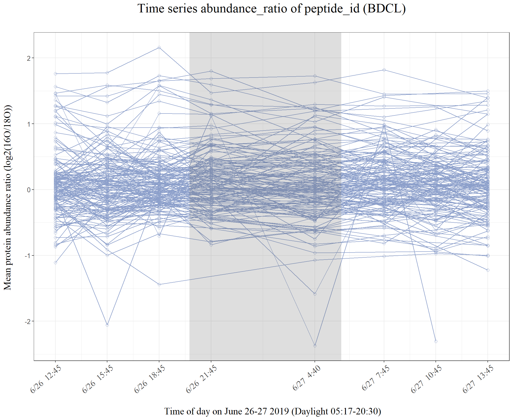
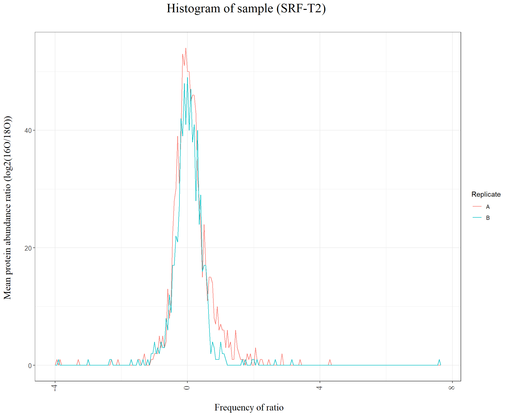

peptide_level_visualization
KiseokUchicago
2021-02-22
Last updated: 2021-03-10
Checks: 7 0
Knit directory: BH_Diel/
This reproducible R Markdown analysis was created with workflowr (version 1.6.2). The Checks tab describes the reproducibility checks that were applied when the results were created. The Past versions tab lists the development history.
Great! Since the R Markdown file has been committed to the Git repository, you know the exact version of the code that produced these results.
Great job! The global environment was empty. Objects defined in the global environment can affect the analysis in your R Markdown file in unknown ways. For reproduciblity it’s best to always run the code in an empty environment.
The command set.seed(20210222) was run prior to running the code in the R Markdown file. Setting a seed ensures that any results that rely on randomness, e.g. subsampling or permutations, are reproducible.
Great job! Recording the operating system, R version, and package versions is critical for reproducibility.
Nice! There were no cached chunks for this analysis, so you can be confident that you successfully produced the results during this run.
Great job! Using relative paths to the files within your workflowr project makes it easier to run your code on other machines.
Great! You are using Git for version control. Tracking code development and connecting the code version to the results is critical for reproducibility.
The results in this page were generated with repository version 2ef4a7c. See the Past versions tab to see a history of the changes made to the R Markdown and HTML files.
Note that you need to be careful to ensure that all relevant files for the analysis have been committed to Git prior to generating the results (you can use wflow_publish or wflow_git_commit). workflowr only checks the R Markdown file, but you know if there are other scripts or data files that it depends on. Below is the status of the Git repository when the results were generated:
Ignored files:
Ignored: .Rhistory
Ignored: .Rproj.user/
Untracked files:
Untracked: 01_IPTL-CyanoSUMI-MI41M-18OMix-16O-A-T1-BDCL_filtered_PSMs.tsv
Untracked: 01_IPTL-CyanoSUMI-MI41M-18OMix-16O-A-T1-BDCL_filtered_PSMs.xlsx
Untracked: 02_IPTL-CyanoSUMI-MI41M-18OMix-16O-A-T1-DCL_filtered_PSMs.tsv
Untracked: 02_IPTL-CyanoSUMI-MI41M-18OMix-16O-A-T1-DCL_filtered_PSMs.xlsx
Untracked: 03_IPTL-CyanoSUMI-MI41M-18OMix-16O-A-T1-SRF_filtered_PSMs.tsv
Untracked: 03_IPTL-CyanoSUMI-MI41M-18OMix-16O-A-T1-SRF_filtered_PSMs.xlsx
Untracked: 04_IPTL-CyanoSUMI-MI41M-18OMix-16O-A-T2-BDCL_filtered_PSMs.tsv
Untracked: 04_IPTL-CyanoSUMI-MI41M-18OMix-16O-A-T2-BDCL_filtered_PSMs.xlsx
Untracked: 05_IPTL-CyanoSUMI-MI41M-18OMix-16O-A-T2-DCL_filtered_PSMs.tsv
Untracked: 05_IPTL-CyanoSUMI-MI41M-18OMix-16O-A-T2-DCL_filtered_PSMs.xlsx
Untracked: 06_IPTL-CyanoSUMI-MI41M-18OMix-16O-A-T2-SRF_filtered_PSMs.tsv
Untracked: 06_IPTL-CyanoSUMI-MI41M-18OMix-16O-A-T2-SRF_filtered_PSMs.xlsx
Untracked: 07_IPTL-CyanoSUMI-MI41M-18OMix-16O-A-T3-BDCL_filtered_PSMs.tsv
Untracked: 07_IPTL-CyanoSUMI-MI41M-18OMix-16O-A-T3-BDCL_filtered_PSMs.xlsx
Untracked: 08_IPTL-CyanoSUMI-MI41M-18OMix-16O-A-T3-DCL_filtered_PSMs.tsv
Untracked: 08_IPTL-CyanoSUMI-MI41M-18OMix-16O-A-T3-DCL_filtered_PSMs.xlsx
Untracked: 09_IPTL-CyanoSUMI-MI41M-18OMix-16O-A-T3-SRF_filtered_PSMs.tsv
Untracked: 09_IPTL-CyanoSUMI-MI41M-18OMix-16O-A-T3-SRF_filtered_PSMs.xlsx
Untracked: 10_IPTL-CyanoSUMI-MI41M-18OMix-16O-A-T4-BDCL_filtered_PSMs.tsv
Untracked: 10_IPTL-CyanoSUMI-MI41M-18OMix-16O-A-T4-BDCL_filtered_PSMs.xlsx
Untracked: 11_IPTL-CyanoSUMI-MI41M-18OMix-16O-A-T4-DCL_filtered_PSMs.tsv
Untracked: 11_IPTL-CyanoSUMI-MI41M-18OMix-16O-A-T4-DCL_filtered_PSMs.xlsx
Untracked: 12_IPTL-CyanoSUMI-MI41M-18OMix-16O-A-T4-SRF_filtered_PSMs.tsv
Untracked: 12_IPTL-CyanoSUMI-MI41M-18OMix-16O-A-T4-SRF_filtered_PSMs.xlsx
Untracked: 13_IPTL-CyanoSUMI-MI41M-18OMix-16O-A-T5-BDCL_filtered_PSMs.tsv
Untracked: 13_IPTL-CyanoSUMI-MI41M-18OMix-16O-A-T5-BDCL_filtered_PSMs.xlsx
Untracked: 14_IPTL-CyanoSUMI-MI41M-18OMix-16O-A-T5-DCL_filtered_PSMs.tsv
Untracked: 14_IPTL-CyanoSUMI-MI41M-18OMix-16O-A-T5-DCL_filtered_PSMs.xlsx
Untracked: 15_IPTL-CyanoSUMI-MI41M-18OMix-16O-A-T5-SRF_filtered_PSMs.tsv
Untracked: 15_IPTL-CyanoSUMI-MI41M-18OMix-16O-A-T5-SRF_filtered_PSMs.xlsx
Untracked: 16_IPTL-CyanoSUMI-MI41M-18OMix-16O-A-T6-BDCL_filtered_PSMs.tsv
Untracked: 16_IPTL-CyanoSUMI-MI41M-18OMix-16O-A-T6-BDCL_filtered_PSMs.xlsx
Untracked: 17_IPTL-CyanoSUMI-MI41M-18OMix-16O-A-T6-DCL_filtered_PSMs.tsv
Untracked: 17_IPTL-CyanoSUMI-MI41M-18OMix-16O-A-T6-DCL_filtered_PSMs.xlsx
Untracked: 18_IPTL-CyanoSUMI-MI41M-18OMix-16O-A-T6-SRF_filtered_PSMs.tsv
Untracked: 18_IPTL-CyanoSUMI-MI41M-18OMix-16O-A-T6-SRF_filtered_PSMs.xlsx
Untracked: 19_IPTL-CyanoSUMI-MI41M-18OMix-16O-A-T7-DCL_filtered_PSMs.tsv
Untracked: 19_IPTL-CyanoSUMI-MI41M-18OMix-16O-A-T7-DCL_filtered_PSMs.xlsx
Untracked: 20_IPTL-CyanoSUMI-MI41M-18OMix-16O-A-T7-SRF_filtered_PSMs.tsv
Untracked: 20_IPTL-CyanoSUMI-MI41M-18OMix-16O-A-T7-SRF_filtered_PSMs.xlsx
Untracked: 21_IPTL-CyanoSUMI-MI41M-18OMix-16O-A-T8-BDCL_filtered_PSMs.tsv
Untracked: 21_IPTL-CyanoSUMI-MI41M-18OMix-16O-A-T8-BDCL_filtered_PSMs.xlsx
Untracked: 22_IPTL-CyanoSUMI-MI41M-18OMix-16O-A-T8-DCL_filtered_PSMs.tsv
Untracked: 22_IPTL-CyanoSUMI-MI41M-18OMix-16O-A-T8-DCL_filtered_PSMs.xlsx
Untracked: 23_IPTL-CyanoSUMI-MI41M-18OMix-16O-A-T8-SRF_filtered_PSMs.tsv
Untracked: 23_IPTL-CyanoSUMI-MI41M-18OMix-16O-A-T8-SRF_filtered_PSMs.xlsx
Untracked: 24_IPTL-CyanoSUMI-MI41M-18OMix-16O-B-T1-BDCL_filtered_PSMs.tsv
Untracked: 24_IPTL-CyanoSUMI-MI41M-18OMix-16O-B-T1-BDCL_filtered_PSMs.xlsx
Untracked: 25_IPTL-CyanoSUMI-MI41M-18OMix-16O-B-T1-DCL_filtered_PSMs.tsv
Untracked: 25_IPTL-CyanoSUMI-MI41M-18OMix-16O-B-T1-DCL_filtered_PSMs.xlsx
Untracked: 26_IPTL-CyanoSUMI-MI41M-18OMix-16O-B-T1-SRF_filtered_PSMs.tsv
Untracked: 26_IPTL-CyanoSUMI-MI41M-18OMix-16O-B-T1-SRF_filtered_PSMs.xlsx
Untracked: 27_IPTL-CyanoSUMI-MI41M-18OMix-16O-B-T2-BDCL_filtered_PSMs.tsv
Untracked: 27_IPTL-CyanoSUMI-MI41M-18OMix-16O-B-T2-BDCL_filtered_PSMs.xlsx
Untracked: 28_IPTL-CyanoSUMI-MI41M-18OMix-16O-B-T2-DCL_filtered_PSMs.tsv
Untracked: 28_IPTL-CyanoSUMI-MI41M-18OMix-16O-B-T2-DCL_filtered_PSMs.xlsx
Untracked: 29_IPTL-CyanoSUMI-MI41M-18OMix-16O-B-T2-SRF_filtered_PSMs.tsv
Untracked: 29_IPTL-CyanoSUMI-MI41M-18OMix-16O-B-T2-SRF_filtered_PSMs.xlsx
Untracked: 30_IPTL-CyanoSUMI-MI41M-18OMix-16O-B-T3-BDCL_filtered_PSMs.tsv
Untracked: 30_IPTL-CyanoSUMI-MI41M-18OMix-16O-B-T3-BDCL_filtered_PSMs.xlsx
Untracked: 31_IPTL-CyanoSUMI-MI41M-18OMix-16O-B-T3-DCL_filtered_PSMs.tsv
Untracked: 31_IPTL-CyanoSUMI-MI41M-18OMix-16O-B-T3-DCL_filtered_PSMs.xlsx
Untracked: 32_IPTL-CyanoSUMI-MI41M-18OMix-16O-B-T3-SRF_filtered_PSMs.tsv
Untracked: 32_IPTL-CyanoSUMI-MI41M-18OMix-16O-B-T3-SRF_filtered_PSMs.xlsx
Untracked: 33_IPTL-CyanoSUMI-MI41M-18OMix-16O-B-T4-BDCL_filtered_PSMs.tsv
Untracked: 33_IPTL-CyanoSUMI-MI41M-18OMix-16O-B-T4-BDCL_filtered_PSMs.xlsx
Untracked: 34_IPTL-CyanoSUMI-MI41M-18OMix-16O-B-T4-DCL_filtered_PSMs.tsv
Untracked: 34_IPTL-CyanoSUMI-MI41M-18OMix-16O-B-T4-DCL_filtered_PSMs.xlsx
Untracked: 35_IPTL-CyanoSUMI-MI41M-18OMix-16O-B-T4-SRF_filtered_PSMs.tsv
Untracked: 35_IPTL-CyanoSUMI-MI41M-18OMix-16O-B-T4-SRF_filtered_PSMs.xlsx
Untracked: 36_IPTL-CyanoSUMI-MI41M-18OMix-16O-B-T5-BDCL_filtered_PSMs.tsv
Untracked: 36_IPTL-CyanoSUMI-MI41M-18OMix-16O-B-T5-BDCL_filtered_PSMs.xlsx
Untracked: 37_IPTL-CyanoSUMI-MI41M-18OMix-16O-B-T5-DCL_filtered_PSMs.tsv
Untracked: 37_IPTL-CyanoSUMI-MI41M-18OMix-16O-B-T5-DCL_filtered_PSMs.xlsx
Untracked: 38_IPTL-CyanoSUMI-MI41M-18OMix-16O-B-T5-SRF_filtered_PSMs.tsv
Untracked: 38_IPTL-CyanoSUMI-MI41M-18OMix-16O-B-T5-SRF_filtered_PSMs.xlsx
Untracked: 39_IPTL-CyanoSUMI-MI41M-18OMix-16O-B-T6-BDCL_filtered_PSMs.tsv
Untracked: 39_IPTL-CyanoSUMI-MI41M-18OMix-16O-B-T6-BDCL_filtered_PSMs.xlsx
Untracked: 40_IPTL-CyanoSUMI-MI41M-18OMix-16O-B-T6-DCL_filtered_PSMs.tsv
Untracked: 40_IPTL-CyanoSUMI-MI41M-18OMix-16O-B-T6-DCL_filtered_PSMs.xlsx
Untracked: 41_IPTL-CyanoSUMI-MI41M-18OMix-16O-B-T6-SRF_filtered_PSMs.tsv
Untracked: 41_IPTL-CyanoSUMI-MI41M-18OMix-16O-B-T6-SRF_filtered_PSMs.xlsx
Untracked: 42_IPTL-CyanoSUMI-MI41M-18OMix-16O-B-T7-BDCL_filtered_PSMs.tsv
Untracked: 42_IPTL-CyanoSUMI-MI41M-18OMix-16O-B-T7-BDCL_filtered_PSMs.xlsx
Untracked: 43_IPTL-CyanoSUMI-MI41M-18OMix-16O-B-T7-DCL_filtered_PSMs.tsv
Untracked: 43_IPTL-CyanoSUMI-MI41M-18OMix-16O-B-T7-DCL_filtered_PSMs.xlsx
Untracked: 44_IPTL-CyanoSUMI-MI41M-18OMix-16O-B-T7-SRF_filtered_PSMs.tsv
Untracked: 44_IPTL-CyanoSUMI-MI41M-18OMix-16O-B-T7-SRF_filtered_PSMs.xlsx
Untracked: 45_IPTL-CyanoSUMI-MI41M-18OMix-16O-B-T8-BDCL_filtered_PSMs.tsv
Untracked: 45_IPTL-CyanoSUMI-MI41M-18OMix-16O-B-T8-BDCL_filtered_PSMs.xlsx
Untracked: 46_IPTL-CyanoSUMI-MI41M-18OMix-16O-B-T8-DCL_filtered_PSMs.tsv
Untracked: 46_IPTL-CyanoSUMI-MI41M-18OMix-16O-B-T8-DCL_filtered_PSMs.xlsx
Untracked: 47_IPTL-CyanoSUMI-MI41M-18OMix-16O-B-T8-SRF_filtered_PSMs.tsv
Untracked: 47_IPTL-CyanoSUMI-MI41M-18OMix-16O-B-T8-SRF_filtered_PSMs.xlsx
Untracked: 48_IPTL-CyanoSUMI-MI41M-18OMix-16O-C-T1-BDCL_filtered_PSMs.tsv
Untracked: 48_IPTL-CyanoSUMI-MI41M-18OMix-16O-C-T1-BDCL_filtered_PSMs.xlsx
Untracked: 49_IPTL-CyanoSUMI-MI41M-18OMix-16O-C-T1-DCL_filtered_PSMs.tsv
Untracked: 49_IPTL-CyanoSUMI-MI41M-18OMix-16O-C-T1-DCL_filtered_PSMs.xlsx
Untracked: 50_IPTL-CyanoSUMI-MI41M-18OMix-16O-C-T1-SRF_filtered_PSMs.tsv
Untracked: 50_IPTL-CyanoSUMI-MI41M-18OMix-16O-C-T1-SRF_filtered_PSMs.xlsx
Untracked: 51_IPTL-CyanoSUMI-MI41M-18OMix-16O-C-T3-BDCL_filtered_PSMs.tsv
Untracked: 51_IPTL-CyanoSUMI-MI41M-18OMix-16O-C-T3-BDCL_filtered_PSMs.xlsx
Untracked: 52_IPTL-CyanoSUMI-MI41M-18OMix-16O-C-T3-DCL_filtered_PSMs.tsv
Untracked: 52_IPTL-CyanoSUMI-MI41M-18OMix-16O-C-T3-DCL_filtered_PSMs.xlsx
Untracked: 53_IPTL-CyanoSUMI-MI41M-18OMix-16O-C-T3-SRF_filtered_PSMs.tsv
Untracked: 53_IPTL-CyanoSUMI-MI41M-18OMix-16O-C-T3-SRF_filtered_PSMs.xlsx
Untracked: 54_IPTL-CyanoSUMI-MI41M-18OMix-16O-C-T4-BDCL_filtered_PSMs.tsv
Untracked: 54_IPTL-CyanoSUMI-MI41M-18OMix-16O-C-T4-BDCL_filtered_PSMs.xlsx
Untracked: 55_IPTL-CyanoSUMI-MI41M-18OMix-16O-C-T4-DCL_filtered_PSMs.tsv
Untracked: 55_IPTL-CyanoSUMI-MI41M-18OMix-16O-C-T4-DCL_filtered_PSMs.xlsx
Untracked: 56_IPTL-CyanoSUMI-MI41M-18OMix-16O-C-T4-SRF_filtered_PSMs.tsv
Untracked: 56_IPTL-CyanoSUMI-MI41M-18OMix-16O-C-T4-SRF_filtered_PSMs.xlsx
Untracked: 57_IPTL-CyanoSUMI-MI41M-18OMix-16O-C-T5-BDCL_filtered_PSMs.tsv
Untracked: 57_IPTL-CyanoSUMI-MI41M-18OMix-16O-C-T5-BDCL_filtered_PSMs.xlsx
Untracked: 58_IPTL-CyanoSUMI-MI41M-18OMix-16O-C-T5-DCL_filtered_PSMs.tsv
Untracked: 58_IPTL-CyanoSUMI-MI41M-18OMix-16O-C-T5-DCL_filtered_PSMs.xlsx
Untracked: 59_IPTL-CyanoSUMI-MI41M-18OMix-16O-C-T5-SRF_filtered_PSMs.tsv
Untracked: 59_IPTL-CyanoSUMI-MI41M-18OMix-16O-C-T5-SRF_filtered_PSMs.xlsx
Untracked: 60_IPTL-CyanoSUMI-MI41M-18OMix-16O-C-T6-BDCL_filtered_PSMs.tsv
Untracked: 60_IPTL-CyanoSUMI-MI41M-18OMix-16O-C-T6-BDCL_filtered_PSMs.xlsx
Untracked: 61_IPTL-CyanoSUMI-MI41M-18OMix-16O-C-T6-DCL_filtered_PSMs.tsv
Untracked: 61_IPTL-CyanoSUMI-MI41M-18OMix-16O-C-T6-DCL_filtered_PSMs.xlsx
Untracked: 62_IPTL-CyanoSUMI-MI41M-18OMix-16O-C-T6-SRF_filtered_PSMs.tsv
Untracked: 62_IPTL-CyanoSUMI-MI41M-18OMix-16O-C-T6-SRF_filtered_PSMs.xlsx
Untracked: 63_IPTL-CyanoSUMI-MI41M-18OMix-16O-C-T7-BDCL_filtered_PSMs.tsv
Untracked: 63_IPTL-CyanoSUMI-MI41M-18OMix-16O-C-T7-BDCL_filtered_PSMs.xlsx
Untracked: 64_IPTL-CyanoSUMI-MI41M-18OMix-16O-C-T7-DCL_filtered_PSMs.tsv
Untracked: 64_IPTL-CyanoSUMI-MI41M-18OMix-16O-C-T7-DCL_filtered_PSMs.xlsx
Untracked: 65_IPTL-CyanoSUMI-MI41M-18OMix-16O-C-T8-BDCL_filtered_PSMs.tsv
Untracked: 65_IPTL-CyanoSUMI-MI41M-18OMix-16O-C-T8-BDCL_filtered_PSMs.xlsx
Untracked: 66_IPTL-CyanoSUMI-MI41M-18OMix-16O-C-T8-DCL_filtered_PSMs.tsv
Untracked: 66_IPTL-CyanoSUMI-MI41M-18OMix-16O-C-T8-DCL_filtered_PSMs.xlsx
Untracked: 67_IPTL-CyanoSUMI-MI41M-18OMix-16O-C-T8-SRF_filtered_PSMs.tsv
Untracked: 67_IPTL-CyanoSUMI-MI41M-18OMix-16O-C-T8-SRF_filtered_PSMs.xlsx
Untracked: Hist_freq_of_peptide_id.pdf
Untracked: Hist_intensity_replicate_centered.pdf
Untracked: Hist_intensity_replicate_not_centered.pdf
Untracked: Hist_intensity_spec_level_centered.pdf
Untracked: Hist_intensity_spec_level_not_centered.pdf
Untracked: Hist_number of timepoints_peptide_appears.pdf
Untracked: P1_number_unique_peptide_per_sample.pdf
Untracked: P2_number_of_cumulative_unique_peptides.pdf
Untracked: Peptide_id.tsv
Untracked: Replicate_ABC50_combined.tsv
Untracked: Replicate_ABC50_combined.xlsx
Untracked: Replicate_ABC63_combined.tsv
Untracked: Replicate_ABC63_combined.xlsx
Untracked: Replicate_ABC67_combined.tsv
Untracked: Replicate_ABC67_combined.xlsx
Untracked: Replicate_BC_combined.tsv
Untracked: Replicate_BC_combined.xlsx
Untracked: Replicate_B_combined.tsv
Untracked: Replicate_B_combined.xlsx
Untracked: Time_series_intesity_all.pdf
Untracked: data/Time_metadata.txt
Untracked: data/counts_example.csv
Untracked: data/diel-Feb21/
Untracked: data/diel-Feb25/
Untracked: data/diel-Feb26/
Untracked: data/diel-Mar2/
Untracked: data/synthetic_control.data.txt
Untracked: hclust_DTW_average_wide.pdf
Untracked: hclust_DTW_average_wide_after_normalization.pdf
Note that any generated files, e.g. HTML, png, CSS, etc., are not included in this status report because it is ok for generated content to have uncommitted changes.
These are the previous versions of the repository in which changes were made to the R Markdown (analysis/peptide_level_visualization.Rmd) and HTML (docs/peptide_level_visualization.html) files. If you’ve configured a remote Git repository (see ?wflow_git_remote), click on the hyperlinks in the table below to view the files as they were in that past version.
| File | Version | Author | Date | Message |
|---|---|---|---|---|
| Rmd | 2ef4a7c | KiseokUchicago | 2021-03-10 | minor changes |
| html | cc8fcea | KiseokUchicago | 2021-03-10 | Build site. |
| Rmd | 71155f8 | KiseokUchicago | 2021-03-10 | splitting rmd |
| html | 3ca3689 | KiseokUchicago | 2021-03-10 | Build site. |
| Rmd | 3b32cf6 | KiseokUchicago | 2021-03-10 | important |
| html | 8a7a3f8 | KiseokUchicago | 2021-03-04 | Build site. |
| Rmd | 227f4ae | KiseokUchicago | 2021-03-04 | spec_level |
| html | c974307 | KiseokUchicago | 2021-03-04 | Build site. |
| Rmd | 2a8d1ba | KiseokUchicago | 2021-03-04 | grid |
| html | f77b37f | KiseokUchicago | 2021-03-04 | Build site. |
| Rmd | 7f223a8 | KiseokUchicago | 2021-03-04 | intensity_histogram |
| html | 3eb4d88 | KiseokUchicago | 2021-03-03 | Build site. |
| Rmd | 19d1e6c | KiseokUchicago | 2021-03-03 | rain fdr |
| html | 45127bd | KiseokUchicago | 2021-03-03 | Build site. |
| Rmd | c6a81a1 | KiseokUchicago | 2021-03-03 | x-axis label |
| html | cd5bef3 | KiseokUchicago | 2021-03-03 | Build site. |
| Rmd | 21703f2 | KiseokUchicago | 2021-03-03 | Rain |
| html | 86aa801 | KiseokUchicago | 2021-03-03 | Build site. |
| Rmd | 7a8405a | KiseokUchicago | 2021-03-03 | rain_not_done |
| html | 403a8fb | KiseokUchicago | 2021-03-03 | Build site. |
| Rmd | 2294f51 | KiseokUchicago | 2021-03-03 | clustering |
| html | 6a61623 | KiseokUchicago | 2021-03-02 | Build site. |
| Rmd | 5478476 | KiseokUchicago | 2021-03-02 | hclust |
| html | 7218e38 | KiseokUchicago | 2021-03-02 | Build site. |
| Rmd | dc0c925 | KiseokUchicago | 2021-03-02 | average |
| html | 52cb184 | KiseokUchicago | 2021-03-02 | Build site. |
| Rmd | 7f26b0f | KiseokUchicago | 2021-03-02 | update |
| html | c2f25d3 | KiseokUchicago | 2021-02-26 | Build site. |
| Rmd | c5ec37e | KiseokUchicago | 2021-02-26 | total 50 samples |
| html | e6cbdfa | KiseokUchicago | 2021-02-25 | Build site. |
| Rmd | af94ad0 | KiseokUchicago | 2021-02-25 | peptide |
| html | 3db29b0 | KiseokUchicago | 2021-02-23 | Build site. |
| Rmd | fe508d1 | KiseokUchicago | 2021-02-23 | publish |
| html | e55579c | KiseokUchicago | 2021-02-23 | Build site. |
| Rmd | 44eb05f | KiseokUchicago | 2021-02-23 | publish |
| html | 1ca3363 | KiseokUchicago | 2021-02-22 | Build site. |
| Rmd | dd3354e | KiseokUchicago | 2021-02-22 | peptide |
| html | 69d6ce7 | KiseokUchicago | 2021-02-22 | Build site. |
| Rmd | deb4db2 | KiseokUchicago | 2021-02-22 | peptide |
| html | 6915013 | KiseokUchicago | 2021-02-22 | Build site. |
| Rmd | 5a66cb1 | KiseokUchicago | 2021-02-22 | peptide |
| html | 12b2c74 | KiseokUchicago | 2021-02-22 | Build site. |
| html | c4cbcd2 | KiseokUchicago | 2021-02-22 | Build site. |
| Rmd | 7830f00 | KiseokUchicago | 2021-02-22 | publish |
| html | ee263ad | KiseokUchicago | 2021-02-22 | Build site. |
| Rmd | 0ccca14 | KiseokUchicago | 2021-02-22 | visualization |
Peptide level visualization
# libraries
library(dplyr)
library(tidyr)
library(stringr)
library(ggplot2)
library(formattable)1. Quality check: Number of uniq peptides (sequence) per sample
# read in combined table of 24 samples (Replicate B)
df_pep <- read.table("Replicate_ABC67_combined.tsv",sep='\t',header = T)
# count unique peptide per sample
df_uni <- df_pep %>% group_by(SampleID) %>% summarize(uniq_pep = length(unique(Base.Peptide.Sequence)))
df_uni1 <- df_uni %>% separate(SampleID, sep='_', into= c('Depth','Time','Replicate'),remove = F)
df_uni2 <- df_uni1 %>% arrange(desc(Depth))
# get the order right from SRF -> DCL -> BDCL
ord <- df_uni2$SampleID
df_uni2$SampleID <- factor(df_uni2$SampleID, levels = ord)
df_uni2$Depth <- factor(df_uni2$Depth, levels = c('SRF','DCL','BDCL'))
# Making barplot
theme_set(theme_bw())
cols <- c('SRF'='#fc8d62','DCL'='#66c2a5','BDCL'='#8da0cb')
uniq1 <- ggplot(df_uni2, aes(x=SampleID, fill=Depth, y=uniq_pep)) + ## I put fill=value which was wrong
geom_bar(stat="identity") +
scale_fill_manual(values=cols) +
ylab("Number of unique peptide sequence \n") +
xlab("\n SampleID") +
ggtitle("Number of unique peptide sequences per sample")+
## adjust positions
theme(plot.title = element_text(size = 20,hjust = 0.5, family="serif")) +
theme(axis.title.x = element_text(size = 15,hjust = 0.5, family="serif")) +
theme(axis.title.y = element_text(size = 15,hjust = 0.5, family="serif")) +
theme(axis.text.x = element_text(angle = 90, hjust = 0.5, vjust=0.3,size=13, family="serif"))+
theme(axis.text.y = element_text(size=10))+
theme(panel.grid.major = element_blank()) +
theme(panel.grid.minor = element_blank())
uniq2 <- uniq1 + geom_text(aes(x=df_uni$SampleID, y=df_uni$uniq_pep, label=df_uni$uniq_pep),
size = 3, hjust = 0.5, position = position_stack(vjust = +1.05), family="serif")
uniq2
sample DCL_T8 doesn’t seem to have good quality MS data. DCL_T8_A was added and now it seems okay.
1.1. Unique number of peptides per timepoint
Are there any differences across time points?
Nope.
# get # of unique peptides
df_uniq <- df_pep %>% group_by(Time,Depth) %>% summarize(uniq_pep = length(unique(Base.Peptide.Sequence)))
df_uniq1 <- df_uniq %>% arrange(desc(Depth))
# get the order right from SRF -> DCL -> BDCL
df_uniq1$Depth <- factor(df_uniq1$Depth, levels = c('SRF','DCL','BDCL'))
# Making barplot
theme_set(theme_bw())
cols <- c('SRF'='#fc8d62','DCL'='#66c2a5','BDCL'='#8da0cb')
time1 <- ggplot(df_uniq1, aes(x=Time, fill=Depth, y=uniq_pep)) + ## I put fill=value which was wrong
geom_bar(stat="identity",position="dodge") +
scale_fill_manual(values=cols) +
ylab("Number of unique peptide sequence \n") +
xlab("\n Sampling Timepoint") +
ggtitle("Number of unique peptide sequences per timepoint (including all replicates)")+
## adjust positions
theme(plot.title = element_text(size = 20,hjust = 0.5, family="serif")) +
theme(axis.title.x = element_text(size = 15,hjust = 0.5, family="serif")) +
theme(axis.title.y = element_text(size = 15,hjust = 0.5, family="serif")) +
theme(axis.text.x = element_text(hjust = 0.5, vjust=0.3,size=13, family="serif"))+
theme(axis.text.y = element_text(size=10))+
theme(panel.grid.major = element_blank()) +
theme(panel.grid.minor = element_blank())
time1
2. Number of accumulative uniq peptides (sequence): Does it saturate?
# read in combined table of 24 samples (Replicate B)
df_pep <- read.table("Replicate_ABC67_combined.tsv",sep='\t',header = T)
# get unique peptides per sample
dt <- df_pep %>% select(SampleID, Base.Peptide.Sequence) %>% unique()
# change SampleID into number
dt1 <- dt %>% select(SampleID) %>% unique() %>% arrange(SampleID) %>% arrange()
dt2 <- tibble::rownames_to_column(dt1,"depth")
# merge dt and dt2
dt_depth <- left_join(dt,dt2,by=c('SampleID'='SampleID'))
dim(dt_depth)[1] 38075 3# get cumulative number of unique peptides (https://stackoverflow.com/questions/15698399/cumulative-count-of-unique-values-in-r)
require(data.table)
dt_depth <- as.data.table(dt_depth)
setkey(dt_depth, "depth")
dt_depth[, Base.Peptide.Sequence := as.numeric(factor(Base.Peptide.Sequence, levels = unique(Base.Peptide.Sequence)))]
setkey(dt_depth, "depth", "Base.Peptide.Sequence")
dt.out <- dt_depth[J(unique(depth)), mult="last"]
dt.out[, Base.Peptide.Sequence := cummax(Base.Peptide.Sequence)]
# getting ready to make plot
df.out <- tibble::rowid_to_column(dt.out)
df.out2 <- df.out %>% select(rowid, Base.Peptide.Sequence) %>% rename(value=Base.Peptide.Sequence) ## 3366 unique peptides
# Making line plot
theme_set(theme_bw())
p1 <- ggplot(df.out2,aes(x = rowid,y = value)) + geom_line(col="magenta") + geom_point(color='maroon') +
ylab("Number of cumulative unique peptide sequence \n") +
xlab("\n Number of cumulative samples") +
# ylim(c(0,2200)) +
ggtitle("Number of cumulative unique peptide sequences \n")+
## adjust positions
theme(plot.title = element_text(size = 20,hjust = 0.5, family="serif")) +
theme(axis.title.x = element_text(size = 15,hjust = 0.5, family="serif")) +
theme(axis.title.y = element_text(size = 15,hjust = 0.5, family="serif")) +
theme(axis.text.x = element_text(hjust = 0.5, vjust=0.3,size=13, family="serif"))+
theme(axis.text.y = element_text(size=10))
# theme(panel.grid.major = element_blank())
# theme(panel.grid.minor = element_blank())
p1 It seems to saturate as more samples are added.
It seems to saturate as more samples are added.
3. Which Peptide_ids are present in all(almost) time points?
Make a histogram of x-axis being the # of time points present, y-axis being the number of Peptide_ids
We need 3 histogram for (1) Surface, (2) DCL, and (3) BDCL
# read in combined table of 24 samples (Replicate B)
df_pep <- read.table("Replicate_ABC67_combined.tsv",sep='\t',header = T)
# (1) Surface
colnames(df_pep) [1] "Spec_id" "Base.Peptide.Sequence"
[3] "log2.16O.18O.Ratio" "cent.log2.16O.18O.Ratio"
[5] "SampleID" "Index"
[7] "Cruise" "Station"
[9] "Isotope" "Replicate"
[11] "Time" "Depth"
[13] "SpectrumID" "ScanID"
[15] "Target." "Decoy."
[17] "Peptide_id" df_srf <- df_pep %>% filter(Depth == 'SRF') %>% select(Peptide_id, SampleID, Time, Depth) %>% unique() %>% arrange(Peptide_id)
# How many time points did it appear
(df_srf2 <- df_srf %>% group_by(Peptide_id) %>% summarize(Timepoints = n_distinct(Time)) %>% ungroup())# A tibble: 2,081 x 2
Peptide_id Timepoints
* <chr> <int>
1 Pep_1 8
2 Pep_10 8
3 Pep_100 8
4 Pep_1000 6
5 Pep_1001 4
6 Pep_1002 4
7 Pep_1003 4
8 Pep_1004 6
9 Pep_1006 6
10 Pep_1007 4
# ... with 2,071 more rows# Check if Pep_1 appeared in 8 time points
df_srf %>% filter(Peptide_id=="Pep_1004") # true 8 times Peptide_id SampleID Time Depth
1 Pep_1004 SRF_T1_A T1 SRF
2 Pep_1004 SRF_T2_A T2 SRF
3 Pep_1004 SRF_T3_A T3 SRF
4 Pep_1004 SRF_T4_A T4 SRF
5 Pep_1004 SRF_T5_B T5 SRF
6 Pep_1004 SRF_T7_B T7 SRF# Histogram
theme_set(theme_bw())
ggplot(df_srf2, aes(Timepoints)) + geom_bar() +
ylab("Number of peptides \n") +
xlab("\n Cumulative number of timepoints peptide are present") +
scale_x_continuous(breaks=seq(1,8,1))+
ggtitle("Distribution of number of timepoints each Peptide_id appears (Surface) \n")+
## adjust positions
theme(plot.title = element_text(size = 20,hjust = 0.5, family="serif")) +
theme(axis.title.x = element_text(size = 15,hjust = 0.5, family="serif")) +
theme(axis.title.y = element_text(size = 15,hjust = 0.5, family="serif")) +
theme(axis.text.x = element_text(hjust = 0.5, vjust=0.3,size=13, family="serif"))+
theme(axis.text.y = element_text(size=10))
# theme(panel.grid.major = element_blank())
# theme(panel.grid.minor = element_blank())
# Let's try to plot all of them at once
df_all <- df_pep %>% select(Peptide_id, SampleID, Time, Depth) %>% unique() %>% arrange(Peptide_id)
# How many time points did it appear
(df_all2 <- df_all %>% group_by(Peptide_id, Depth) %>% summarize(Timepoints = n_distinct(Time)) %>% ungroup())# A tibble: 6,104 x 3
Peptide_id Depth Timepoints
<chr> <chr> <int>
1 Pep_1 BDCL 8
2 Pep_1 DCL 8
3 Pep_1 SRF 8
4 Pep_10 BDCL 8
5 Pep_10 DCL 8
6 Pep_10 SRF 8
7 Pep_100 BDCL 8
8 Pep_100 DCL 8
9 Pep_100 SRF 8
10 Pep_1000 BDCL 1
# ... with 6,094 more rowsdf_all2$Depth <- factor(df_all2$Depth, levels = c('SRF','DCL','BDCL'))
# Histogram
ggplot(df_all2, aes(Timepoints)) + geom_bar(aes(fill=Depth), position='dodge') +
scale_fill_manual(values=cols) +
ylab("Number of peptides \n") +
xlab("\n Cumulative number of timepoints peptide are present") +
scale_x_continuous(breaks=seq(1,8,1))+
ggtitle("Distribution of number of timepoints each Peptide_id appears \n")+
## adjust positions
theme(plot.title = element_text(size = 20,hjust = 0.5, family="serif")) +
theme(axis.title.x = element_text(size = 15,hjust = 0.5, family="serif")) +
theme(axis.title.y = element_text(size = 15,hjust = 0.5, family="serif")) +
theme(axis.text.x = element_text(hjust = 0.5, vjust=0.3,size=13, family="serif"))+
theme(axis.text.y = element_text(size=10))
# theme(panel.grid.major = element_blank())
# theme(panel.grid.minor = element_blank())3.2. For the peptides that show up only in 1 time point
# filter peptides that appear only once
df_once <- df_all2 %>% filter(Timepoints ==1)
# innerjoin to get only the peptide_id from above (that appear once)
df_norep <- df_all %>% select(-SampleID) %>% unique() # get unique peptide_id per Sample (not replicate)
df_once2 <- inner_join(df_norep,df_once,by=c("Depth"="Depth","Peptide_id"="Peptide_id"))
df_once2$Depth <- factor(df_once2$Depth, levels = c('SRF','DCL','BDCL'))
# Histogram
theme_set(theme_bw())
ggplot(df_once2, aes(Time)) + geom_bar(aes(fill=Depth), position='dodge') +
scale_fill_manual(values=cols) +
ylab("Number of unique peptides \n") +
xlab("\n Sampling Timepoint") +
# scale_x_continuous(breaks=seq(1,8,1))+
ggtitle("For peptide_ids detected once, in what timepoint is it detected? \n")+
## adjust positions
theme(plot.title = element_text(size = 20,hjust = 0.5, family="serif")) +
theme(axis.title.x = element_text(size = 15,hjust = 0.5, family="serif")) +
theme(axis.title.y = element_text(size = 15,hjust = 0.5, family="serif")) +
theme(axis.text.x = element_text(hjust = 0.5, vjust=0.3,size=13, family="serif"))+
theme(axis.text.y = element_text(size=10))
# theme(panel.grid.major = element_blank())
# theme(panel.grid.minor = element_blank())In the surface and deep chlorophyll layer at T1 and T7, the numbers seem to surge.
This is when the sun is at its peak.
4. Plotting time series fluctuation for the peptides
First retrieve the log abundance_ratio value for all peptides (average over the same spec_id)
# (1) Get list of peptides that are present in 7 or 8 timepoints
df_all2_filt <- df_all2 %>% filter(Timepoints > 6) %>% unique()
# (2) Let's average the abundance_ratio for each unique peptide
df_int <- df_pep %>% select(Peptide_id, Spec_id, cent.log2.16O.18O.Ratio, SampleID, Time, Depth, Replicate) %>%
unique() %>% arrange(Peptide_id)
head(df_int) Peptide_id Spec_id cent.log2.16O.18O.Ratio SampleID Time Depth
1 Pep_1 BDCL_T1_A_31195 -0.3768094 BDCL_T1_A T1 BDCL
2 Pep_1 BDCL_T1_A_31179 -0.2659891 BDCL_T1_A T1 BDCL
3 Pep_1 BDCL_T1_A_31003 -0.4227962 BDCL_T1_A T1 BDCL
4 Pep_1 BDCL_T1_A_31022 -0.3675320 BDCL_T1_A T1 BDCL
5 Pep_1 BDCL_T1_A_31372 -0.3737250 BDCL_T1_A T1 BDCL
6 Pep_1 BDCL_T1_A_31355 -0.4533029 BDCL_T1_A T1 BDCL
Replicate
1 A
2 A
3 A
4 A
5 A
6 Adf_int %>% filter(Peptide_id=='Pep_1' & Time =='T1' & SampleID == 'BDCL_T1_A') Peptide_id Spec_id cent.log2.16O.18O.Ratio SampleID Time Depth
1 Pep_1 BDCL_T1_A_31195 -0.3768094 BDCL_T1_A T1 BDCL
2 Pep_1 BDCL_T1_A_31179 -0.2659891 BDCL_T1_A T1 BDCL
3 Pep_1 BDCL_T1_A_31003 -0.4227962 BDCL_T1_A T1 BDCL
4 Pep_1 BDCL_T1_A_31022 -0.3675320 BDCL_T1_A T1 BDCL
5 Pep_1 BDCL_T1_A_31372 -0.3737250 BDCL_T1_A T1 BDCL
6 Pep_1 BDCL_T1_A_31355 -0.4533029 BDCL_T1_A T1 BDCL
7 Pep_1 BDCL_T1_A_30845 0.1603187 BDCL_T1_A T1 BDCL
8 Pep_1 BDCL_T1_A_30832 0.2822996 BDCL_T1_A T1 BDCL
9 Pep_1 BDCL_T1_A_31549 -0.2180393 BDCL_T1_A T1 BDCL
10 Pep_1 BDCL_T1_A_31536 -0.1778131 BDCL_T1_A T1 BDCL
11 Pep_1 BDCL_T1_A_31789 -0.3197409 BDCL_T1_A T1 BDCL
12 Pep_1 BDCL_T1_A_32226 -0.4774925 BDCL_T1_A T1 BDCL
Replicate
1 A
2 A
3 A
4 A
5 A
6 A
7 A
8 A
9 A
10 A
11 A
12 A# first average the spectrum_id per sample
# important to make sure to take the mean of the log raio (instead of taking log2 after averaging the original value(2^x))
df_ave <- df_int %>% group_by(SampleID, Time, Depth, Replicate, Peptide_id) %>%
summarize(Mean_abundance_ratio=mean(cent.log2.16O.18O.Ratio),
SD_pep=sd(cent.log2.16O.18O.Ratio)) %>% ungroup()
head(df_ave)# A tibble: 6 x 7
SampleID Time Depth Replicate Peptide_id Mean_abundance_ratio SD_pep
<chr> <chr> <chr> <chr> <chr> <dbl> <dbl>
1 BDCL_T1_A T1 BDCL A Pep_1 -0.251 0.240
2 BDCL_T1_A T1 BDCL A Pep_10 0.229 0.241
3 BDCL_T1_A T1 BDCL A Pep_100 0.0658 0.286
4 BDCL_T1_A T1 BDCL A Pep_101 0.0175 0.0496
5 BDCL_T1_A T1 BDCL A Pep_1014 0.863 NA
6 BDCL_T1_A T1 BDCL A Pep_1015 0.158 0.0991dim(df_ave)[1] 38075 7df_ave %>% filter(Peptide_id=='Pep_1' & Time =='T1',Depth=="BDCL") # check# A tibble: 3 x 7
SampleID Time Depth Replicate Peptide_id Mean_abundance_ratio SD_pep
<chr> <chr> <chr> <chr> <chr> <dbl> <dbl>
1 BDCL_T1_A T1 BDCL A Pep_1 -0.251 0.240
2 BDCL_T1_B T1 BDCL B Pep_1 -0.0163 0.212
3 BDCL_T1_C T1 BDCL C Pep_1 0.506 0.277# Now, average and error by replicate
# see here for calculating error bar in log scale (https://faculty.washington.edu/stuve/log_error.pdf)
# but here we will not use the method in the link above
# calculate average and error bar for abundance_ratio
# SE calculated with Jake Waldbauer's method: sqrt(se(Mean_abundance_ratio)^2 +(mean(SD_pep))^2))
# standard error
se <- function(x) sd(x)/sqrt(length(x))
df_ave_rep <- df_ave %>% group_by(Time, Depth, Peptide_id) %>%
summarize(Ave_abundance_ratio=mean(Mean_abundance_ratio),
SE_abundance_ratio=sqrt((se(Mean_abundance_ratio))^2 +(mean(SD_pep))^2)) %>% ungroup()
head(df_ave_rep,10)# A tibble: 10 x 5
Time Depth Peptide_id Ave_abundance_ratio SE_abundance_ratio
<chr> <chr> <chr> <dbl> <dbl>
1 T1 BDCL Pep_1 0.0796 0.330
2 T1 BDCL Pep_10 -0.185 0.270
3 T1 BDCL Pep_100 0.214 0.149
4 T1 BDCL Pep_1003 0.0789 NA
5 T1 BDCL Pep_1007 0.244 NA
6 T1 BDCL Pep_1008 -0.340 NA
7 T1 BDCL Pep_101 0.191 0.191
8 T1 BDCL Pep_1011 0.253 NA
9 T1 BDCL Pep_1012 -0.267 NA
10 T1 BDCL Pep_1014 0.863 NA # why is there no sd for Pep_1004?
df_ave %>% group_by(SampleID) %>% filter(Peptide_id=='Pep_1003') # there is only 1 sample for T1 BDCL # A tibble: 10 x 7
# Groups: SampleID [10]
SampleID Time Depth Replicate Peptide_id Mean_abundance_ratio SD_pep
<chr> <chr> <chr> <chr> <chr> <dbl> <dbl>
1 BDCL_T1_B T1 BDCL B Pep_1003 0.0789 NA
2 BDCL_T7_B T7 BDCL B Pep_1003 -0.0795 NA
3 DCL_T3_A T3 DCL A Pep_1003 0.248 NA
4 SRF_T1_A T1 SRF A Pep_1003 0.293 0.125
5 SRF_T1_B T1 SRF B Pep_1003 -0.102 NA
6 SRF_T2_A T2 SRF A Pep_1003 0.308 NA
7 SRF_T3_A T3 SRF A Pep_1003 0.288 0.00194
8 SRF_T3_B T3 SRF B Pep_1003 0.0473 0.138
9 SRF_T4_A T4 SRF A Pep_1003 0.205 0.0673
10 SRF_T4_B T4 SRF B Pep_1003 0.0444 0.196 df_ave_rep2 <- df_ave_rep %>% mutate(error_up=Ave_abundance_ratio+SE_abundance_ratio) %>%
mutate(error_down=Ave_abundance_ratio-SE_abundance_ratio)
head(df_ave_rep2)# A tibble: 6 x 7
Time Depth Peptide_id Ave_abundance_rat~ SE_abundance_ra~ error_up error_down
<chr> <chr> <chr> <dbl> <dbl> <dbl> <dbl>
1 T1 BDCL Pep_1 0.0796 0.330 0.410 -0.251
2 T1 BDCL Pep_10 -0.185 0.270 0.0858 -0.455
3 T1 BDCL Pep_100 0.214 0.149 0.363 0.0658
4 T1 BDCL Pep_1003 0.0789 NA NA NA
5 T1 BDCL Pep_1007 0.244 NA NA NA
6 T1 BDCL Pep_1008 -0.340 NA NA NA # (3) import time metadata and merge
(df_time <- read.table('data/Time_metadata.txt', header=T, sep='\t')) timepoint date_time elapsed_hours
1 T1 6/26/2019 12:45:00 0
2 T2 6/26/2019 15:45:00 3
3 T3 6/26/2019 18:45:00 6
4 T4 6/26/2019 21:45:00 9
5 T5 6/27/2019 4:40:00 15
6 T6 6/27/2019 7:45:00 19
7 T7 6/27/2019 10:45:00 22
8 T8 6/27/2019 13:45:00 25df_time$date_time <- str_replace(df_time$date_time, "/2019"," ")
df_time$date_time <- str_replace(df_time$date_time, ":00$","")
# left_join with average data
df_ave2 <- df_ave_rep2 %>% left_join(df_time, by=c('Time'='timepoint'))
head(df_ave2)# A tibble: 6 x 9
Time Depth Peptide_id Ave_abundance_rat~ SE_abundance_ra~ error_up error_down
<chr> <chr> <chr> <dbl> <dbl> <dbl> <dbl>
1 T1 BDCL Pep_1 0.0796 0.330 0.410 -0.251
2 T1 BDCL Pep_10 -0.185 0.270 0.0858 -0.455
3 T1 BDCL Pep_100 0.214 0.149 0.363 0.0658
4 T1 BDCL Pep_1003 0.0789 NA NA NA
5 T1 BDCL Pep_1007 0.244 NA NA NA
6 T1 BDCL Pep_1008 -0.340 NA NA NA
# ... with 2 more variables: date_time <chr>, elapsed_hours <int># only use peptides that appear 7 or 8 times
df_ave2 %>% select(Peptide_id) %>% unique() %>% dim() # 3233 peptides before[1] 3366 1df_filt78 <- inner_join(df_ave2, df_all2_filt, by=c('Peptide_id'='Peptide_id','Depth'='Depth'))
# inspecting if the inner join was successful
head(df_filt78)# A tibble: 6 x 10
Time Depth Peptide_id Ave_abundance_rat~ SE_abundance_ra~ error_up error_down
<chr> <chr> <chr> <dbl> <dbl> <dbl> <dbl>
1 T1 BDCL Pep_1 0.0796 0.330 0.410 -0.251
2 T1 BDCL Pep_10 -0.185 0.270 0.0858 -0.455
3 T1 BDCL Pep_100 0.214 0.149 0.363 0.0658
4 T1 BDCL Pep_101 0.191 0.191 0.382 -0.000815
5 T1 BDCL Pep_102 0.272 NA NA NA
6 T1 BDCL Pep_103 0.478 0.176 0.654 0.302
# ... with 3 more variables: date_time <chr>, elapsed_hours <int>,
# Timepoints <int>colnames(df_ave2)[1] "Time" "Depth" "Peptide_id"
[4] "Ave_abundance_ratio" "SE_abundance_ratio" "error_up"
[7] "error_down" "date_time" "elapsed_hours" colnames(df_time)[1] "timepoint" "date_time" "elapsed_hours"colnames(df_filt78) [1] "Time" "Depth" "Peptide_id"
[4] "Ave_abundance_ratio" "SE_abundance_ratio" "error_up"
[7] "error_down" "date_time" "elapsed_hours"
[10] "Timepoints" df_filt78 %>% select(Peptide_id) %>% unique() %>% dim() # 841 peptides for peptides in 7 or 8 timepoints[1] 841 1df_filt78$Depth <- factor(df_filt78$Depth, levels = c('SRF','DCL','BDCL'))
# get only 8 ones
df_filt8 <- df_filt78 %>% filter(Timepoints > 7)
df_filt8 %>% select(Peptide_id) %>% unique() %>% dim() # 661 peptides for peptides in all 8 timepoints[1] 661 1df_filt8$Depth <- factor(df_filt8$Depth, levels = c('SRF','DCL','BDCL'))
# get only 7 ones
df_filt7 <- df_filt78 %>% filter(Timepoints == 7)
df_filt7 %>% select(Peptide_id) %>% unique() %>% dim() # 356 peptides for peptides in 7 timepoints[1] 356 1df_filt7$Depth <- factor(df_filt7$Depth, levels = c('SRF','DCL','BDCL'))Now I do it differently: just + and - the standard error. This is how I used to derive the error bar before (https://faculty.washington.edu/stuve/log_error.pdf) log scale error bar: d(log2y)=1/log2 * (dy / y) df_ave_rep2 <- df_ave_rep %>% mutate(ave_abundance_ratio = 2^Ave_abundance_ratio) %>% mutate(rel_error = sd_abundance_ratio/ave_abundance_ratio) %>% mutate(log2_sd_abundance_ratio = (1/log(2))*rel_error) %>% mutate(error_up=Ave_abundance_ratio+log2_sd_abundance_ratio) %>% mutate(error_down=Ave_abundance_ratio-log2_sd_abundance_ratio)
Plot for peptides present in 7 or 8 timepoints
# (4) Plot the scatter plot with error bars
theme_set(theme_bw())
ggplot(df_filt78, aes(x=elapsed_hours,y=Ave_abundance_ratio, color=Depth, group=interaction(Peptide_id,Depth))) +
geom_point(size=2, shape=21) +
geom_line()+
geom_errorbar(aes(ymin=error_down, ymax=error_up), width=.2, position=position_dodge(.9))+
scale_color_manual(values=cols) +
ylab("Mean protein abundance ratio (log2(16O/18O)) \n") +
xlab("\n Time of day on June 26-27 2019 (Daylight 05:17-20:30)") +
scale_x_continuous(breaks=df_time$elapsed_hours,labels =c(df_time$date_time))+
ggtitle("Time series abundance_ratio of peptide_id \n")+
## adjust positions
theme(plot.title = element_text(size = 20,hjust = 0.5, family="serif")) +
theme(axis.title.x = element_text(size = 15,hjust = 0.5, family="serif")) +
theme(axis.title.y = element_text(size = 15,hjust = 0.5, family="serif")) +
theme(axis.text.x = element_text(hjust = 0.9, vjust=0.9,angle=40,size=13, family="serif"))+
theme(axis.text.y = element_text(size=10)) +
annotate("rect", xmin = 7.75, xmax = 16.53, ymin = -Inf, ymax = Inf, alpha = .2)
# geom_rect(aes(xmin=7.75, xmax=16.53, ymin=0, ymax=Inf))
# theme(panel.grid.major = element_blank()) +
# theme(panel.grid.minor = element_blank())without error bars
theme_set(theme_bw())
ggplot(df_filt78, aes(x=elapsed_hours,y=Ave_abundance_ratio, color=Depth, group=interaction(Peptide_id,Depth))) +
geom_point(size=2, shape=21) +
geom_line()+
# geom_errorbar(aes(ymin=error_down, ymax=error_up), width=.2, position=position_dodge(.9))+
scale_color_manual(values=cols) +
ylab("Mean protein abundance ratio (log2(16O/18O)) \n") +
xlab("\n Time of day on June 26-27 2019 (Daylight 05:17-20:30)") +
scale_x_continuous(breaks=df_time$elapsed_hours,labels =c(df_time$date_time))+
ggtitle("Time series abundance_ratio of peptide_id \n")+
## adjust positions
theme(plot.title = element_text(size = 20,hjust = 0.5, family="serif")) +
theme(axis.title.x = element_text(size = 15,hjust = 0.5, family="serif")) +
theme(axis.title.y = element_text(size = 15,hjust = 0.5, family="serif")) +
theme(axis.text.x = element_text(hjust = 0.9, vjust=0.9,angle=40,size=13, family="serif"))+
theme(axis.text.y = element_text(size=10)) +
annotate("rect", xmin = 7.75, xmax = 16.53, ymin = -Inf, ymax = Inf, alpha = .2)
4.1. Surface(SRF)
# color code
# 1. Surface(orange): #fc8d62
# 2. DCL(green): #66c2a5
# 3. BDCL(blue): #8da0cb
color_vec <- c('#fc8d62','#66c2a5','#8da0cb')
depth_vec <- c('SRF','DCL','BDCL')
time_series_1depth_woError <- function(df_filt78, depth){
theme_set(theme_bw())
# filter depth
df_filt78_s <- df_filt78 %>% filter(Depth == depth_vec[depth])
ggplot(df_filt78_s, aes(x=elapsed_hours,y=Ave_abundance_ratio, group=Peptide_id)) +
geom_point(size=2, shape=21, color=color_vec[depth]) +
geom_line(color= color_vec[depth])+
ylab("Mean protein abundance ratio (log2(16O/18O)) \n") +
xlab("\n Time of day on June 26-27 2019 (Daylight 05:17-20:30)") +
scale_x_continuous(breaks=df_time$elapsed_hours,labels =c(df_time$date_time))+
ggtitle(paste0("Time series abundance_ratio of peptide_id"," (",depth_vec[depth],")","\n"))+
## adjust positions
theme(plot.title = element_text(size = 20,hjust = 0.5, family="serif")) +
theme(axis.title.x = element_text(size = 15,hjust = 0.5, family="serif")) +
theme(axis.title.y = element_text(size = 15,hjust = 0.5, family="serif")) +
theme(axis.text.x = element_text(hjust = 0.9, vjust=0.9,angle=40,size=13, family="serif"))+
theme(axis.text.y = element_text(size=10)) +
annotate("rect", xmin = 7.75, xmax = 16.53, ymin = -Inf, ymax = Inf, alpha = .2)
# theme(panel.grid.major = element_blank()) +
# theme(panel.grid.minor = element_blank())
}
time_series_1depth_wError <- function(df_filt78, depth){
theme_set(theme_bw())
# filter depth
df_filt78_s <- df_filt78 %>% filter(Depth == depth_vec[depth])
ggplot(df_filt78_s, aes(x=elapsed_hours,y=Ave_abundance_ratio, group=Peptide_id)) +
geom_point(size=2, shape=21, color=color_vec[depth]) +
geom_line(color= color_vec[depth])+
geom_errorbar(aes(ymin=error_down, ymax=error_up), width=.05, position=position_dodge(.2),color='red')+
ylab("Mean protein abundance ratio (log2(16O/18O)) \n") +
xlab("\n Time of day on June 26-27 2019 (Daylight 05:17-20:30)") +
scale_x_continuous(breaks=df_time$elapsed_hours,labels =c(df_time$date_time))+
ggtitle(paste0("Time series abundance_ratio of peptide_id"," (",depth_vec[depth],")","\n"))+
## adjust positions
theme(plot.title = element_text(size = 20,hjust = 0.5, family="serif")) +
theme(axis.title.x = element_text(size = 15,hjust = 0.5, family="serif")) +
theme(axis.title.y = element_text(size = 15,hjust = 0.5, family="serif")) +
theme(axis.text.x = element_text(hjust = 0.9, vjust=0.9,angle=40,size=13, family="serif"))+
theme(axis.text.y = element_text(size=10)) +
annotate("rect", xmin = 7.75, xmax = 16.53, ymin = -Inf, ymax = Inf, alpha = .2)
# theme(panel.grid.major = element_blank()) +
# theme(panel.grid.minor = element_blank())
}
# when we use all 7, 8 appearance cases
time_series_1depth_woError(df_filt78,1)
time_series_1depth_wError(df_filt78,1)
# when we use only 8 appearance cases
time_series_1depth_woError(df_filt8,1)
time_series_1depth_wError(df_filt8,1)# when we use only 7 appearance cases
time_series_1depth_woError(df_filt7,1)
time_series_1depth_wError(df_filt7,1)
4.2. Deep Chlorophyll layer (DCL)
# when we use all 7, 8 appearance cases
time_series_1depth_woError(df_filt78,2)
time_series_1depth_wError(df_filt78,2)
# when we use only 8 appearance cases
time_series_1depth_woError(df_filt8,2)time_series_1depth_wError(df_filt8,2)
# when we use only 7 appearance cases
time_series_1depth_woError(df_filt7,2)time_series_1depth_wError(df_filt7,2)
4.3. Below Deep Chlorophyll layer (BDCL)
# when we use all 7, 8 appearance cases
time_series_1depth_woError(df_filt78,3)
time_series_1depth_wError(df_filt78,3)
# when we use only 8 appearance cases
time_series_1depth_woError(df_filt8,3)
time_series_1depth_wError(df_filt8,3)# when we use only 7 appearance cases
time_series_1depth_woError(df_filt7,3)
time_series_1depth_wError(df_filt7,3)5. Ordination analysis
For time series clustering with R, the first step is to work out an appropriate distance/similarity metric, and then, at the second step, use existing clustering techniques, such as k-means, hierarchical clustering, density-based clustering or subspace clustering, to find clustering structures. (http://www.rdatamining.com/examples/time-series-clustering-classification)
5.1. Hierarchical clustering using Dynamic time warping distance
Dynamic Time Warping (DTW) finds optimal alignment between two time series, and DTW distance is used as a distance metric in the example below. (http://www.rdatamining.com/examples/time-series-clustering-classification)
# let's try cluster our time series data
colnames(df_filt8) [1] "Time" "Depth" "Peptide_id"
[4] "Ave_abundance_ratio" "SE_abundance_ratio" "error_up"
[7] "error_down" "date_time" "elapsed_hours"
[10] "Timepoints" df_8 <- df_filt8 %>% filter(Depth=='SRF') %>% select(Peptide_id,Time,Ave_abundance_ratio)
# reshape the dataframe with timepoints
library(maditr)
v_names <- c("T1","T2","T3","T4","T5","T6","T7","T8")
df_8$Time <- factor(df_8$Time, levels=v_names)
dc_8 <- dcast(df_8, Peptide_id ~ Time, value.var = "Ave_abundance_ratio")
# make Peptide_id more simpler (Pep_1 -> 1)
dc_8$Peptide_id <- str_replace(dc_8$Peptide_id,"Pep_","P.")
# make first column into row name
dc_8 <- tibble::column_to_rownames(dc_8, var="Peptide_id")
# DTW distances
library(dtw)
any(is.na(dc_8)) # False: there is no NA in the table[1] FALSEdistMatrix <- dist(dc_8, method="DTW")
hc <- hclust(distMatrix, method="average")
plot(hc, cex=0.7, xlab='Hierarchical clustering of Distance(DTW) Matrix')
Draw the particular small cluster in the time series plot
# function for plotting cluster of piptides
time_series_clust_wError <- function(df_filt78, depth, clust1){
theme_set(theme_bw())
# filter depth
df_filt78_s <- df_filt78 %>% filter(Depth == depth_vec[depth]) %>% filter(Peptide_id %in% clust1)
ggplot(df_filt78_s, aes(x=elapsed_hours,y=Ave_abundance_ratio, group=Peptide_id)) +
geom_point(size=2, shape=21, color=color_vec[depth]) +
geom_line(color= color_vec[depth])+
geom_errorbar(aes(ymin=error_down, ymax=error_up), width=.05, position=position_dodge(.2),color='red')+
ylab("Mean protein abundance ratio (log2(16O/18O)) \n") +
xlab("\n Time of day on June 26-27 2019 (Daylight 05:17-20:30)") +
scale_x_continuous(breaks=df_time$elapsed_hours,labels =c(df_time$date_time))+
ggtitle(paste0("Time series abundance_ratio of peptide_id"," (",depth_vec[depth],")","\n"))+
## adjust positions
theme(plot.title = element_text(size = 20,hjust = 0.5, family="serif")) +
theme(axis.title.x = element_text(size = 15,hjust = 0.5, family="serif")) +
theme(axis.title.y = element_text(size = 15,hjust = 0.5, family="serif")) +
theme(axis.text.x = element_text(hjust = 0.9, vjust=0.9,angle=40,size=13, family="serif"))+
theme(axis.text.y = element_text(size=10)) +
annotate("rect", xmin = 7.75, xmax = 16.53, ymin = -Inf, ymax = Inf, alpha = .2)
# theme(panel.grid.major = element_blank()) +
# theme(panel.grid.minor = element_blank())
}
# cluster1 (outgroup-like)
clust1 <- c('632',"596","443","453","522","153","851","493","50","574","584","402","813")
clust1 <- str_replace(clust1,"^","Pep_") # make Peptide_id
time_series_clust_wError(df_filt8, 1, clust1)# cluster2
clust2 <- c("197","78","562","112","87","310","207", "47","319","91","289","82","697","441","142","191", "34","105","426","882","8","18","5","132","327")
clust2 <- str_replace(clust2,"^","Pep_") # make Peptide_id
time_series_clust_wError(df_filt8, 1, clust2)
5.2. Principal coordinate analysis (ordination plot, PCoA) with DTW distance
Use the DTW distance matrix to plot PCoA
# Use the
# Transform distMatrix into matrix A
distmat <- as(distMatrix, "matrix")
dim(distmat)[1] 532 532A <- -1/2*distmat^2
dim(A)[1] 532 532# Scaling/centering of Matrix A
RowM <- rowMeans(A)
ColM <- colMeans(A)
M <- mean(A)
Delta <- A
for (i in 1:dim(A)[1]){
for (j in 1:dim(A)[2]) {
Delta[i,j] <- Delta[i,j] - RowM[i] - ColM[j] + M
}
}
# Compute the eigenvalues and eigenvectors of Delta
Eigen <- eigen(Delta)
# SEE YOU GET 5 EIGENVALUES (nrow = ncol of sqare distance matrix)
# Scale the eigenvectors
FirstEigenvector <- Eigen$vectors[,1]
FirstEigenvalue <- Eigen$values[1]
SecondEigenvector <- Eigen$vectors[,2]
SecondEigenvalue <- Eigen$values[2]
PrincipalCoords <- data.frame(First = FirstEigenvector*sqrt(FirstEigenvalue),
Sedond = SecondEigenvector * sqrt(SecondEigenvalue))
# we can take a shortcut instead: cmdScale or pco is now equal your PrincipalCoords (https://rstudio-pubs-static.s3.amazonaws.com/68544_06343669257d4f35aaca449f9ff1e6f7.html, https://genomicsclass.github.io/book/pages/mds.html)
require(labdsv)
pco_pep <- pco(distmat, k =2)
# pco_pep2 <- cmdscale(distmat, k =2)
# cmdscale(distmat, 2, eig=TRUE)$GOF
# plot PCoA without peptide_id labels
ggplot(as.data.frame(pco_pep$points), aes(x = V1, y = V2, label = row.names(as.data.frame(pco_pep$points)))) +
theme(plot.title = element_text(size = 20,hjust = 0.5, face="bold")) +
geom_point(size = 4, color='pink',alpha=0.7)+
xlab(paste0('\n PCoA1', " (explained variance: ",round(pco_pep$GOF[1],3)*100,"%)"))+
ylab(paste0("PCoA2"," (explained variance: ",round(pco_pep$GOF[2]-pco_pep$GOF[1],3)*100,"%) \n")) +
ggtitle("Peptide ordination PCoA plot (DTW distance) \n") +
## adjust positions
guides(fill = guide_legend(ncol = 4,reverse = T))+
theme(legend.position="bottom") +
theme(plot.title = element_text(size = 20,hjust = 0.5, face='bold')) +
theme(axis.title.x = element_text(size = 15,hjust = 0.5, face='bold')) +
theme(axis.title.y = element_text(size = 13,hjust = 0.5, face='bold')) +
theme(axis.text.x = element_text(angle = 90, hjust = 0.95,face='bold', vjust=0.4,size=15))+
theme(axis.text.y = element_text(size=15, face='bold'))
# plot PCoA with peptide_id labels
library(ggrepel)
PCoA_1 <- ggplot(as.data.frame(pco_pep$points), aes(x = V1, y = V2, label = row.names(as.data.frame(pco_pep$points)))) +
theme(plot.title = element_text(size = 20,hjust = 0.5, face="bold")) +
geom_point(size = 4, color='pink',alpha=0.7)+
xlab(paste0('\n PCoA1', " (explained variance: ",round(pco_pep$GOF[1],3)*100,"%)"))+
ylab(paste0("PCoA2"," (explained variance: ",round(pco_pep$GOF[2]-pco_pep$GOF[1],3)*100,"%) \n")) +
ggtitle("Peptide ordination PCoA plot (DTW distance) \n") +
## adjust positions
guides(fill = guide_legend(ncol = 4,reverse = T))+
theme(legend.position="bottom") +
theme(plot.title = element_text(size = 20,hjust = 0.5, face='bold')) +
theme(axis.title.x = element_text(size = 15,hjust = 0.5, face='bold')) +
theme(axis.title.y = element_text(size = 15,hjust = 0.5, face='bold')) +
theme(axis.text.x = element_text(angle = 90, hjust = 0.95,face='bold', vjust=0.4,size=15))+
theme(axis.text.y = element_text(size=15, face='bold')) +
ggrepel::geom_label_repel()
# theme(panel.grid.major = element_blank()) +
# theme(panel.grid.minor = element_blank(), panel.background=element_blank(), plot.background=element_blank())
PCoA_1
5.2.2. Ordination analysis by samples (PCA, Principal component analysis)
# make the matrix by reshaping dataframe
library(maditr)
dim(df_ave)[1] 38075 7dc_ave <- dcast(df_ave, SampleID ~ Peptide_id, value.var = "Mean_abundance_ratio")
dim(dc_ave)[1] 67 3367# names(dc_ave)
rownames(dc_ave) [1] "1" "2" "3" "4" "5" "6" "7" "8" "9" "10" "11" "12" "13" "14" "15"
[16] "16" "17" "18" "19" "20" "21" "22" "23" "24" "25" "26" "27" "28" "29" "30"
[31] "31" "32" "33" "34" "35" "36" "37" "38" "39" "40" "41" "42" "43" "44" "45"
[46] "46" "47" "48" "49" "50" "51" "52" "53" "54" "55" "56" "57" "58" "59" "60"
[61] "61" "62" "63" "64" "65" "66" "67"# make Peptide_id more simpler (Pep_1 -> P.1)
names(dc_ave) <- str_replace(names(dc_ave),"Pep_","P.")
# make first column into row name
dc_ave <- tibble::column_to_rownames(dc_ave, var="SampleID")
dim(dc_ave) # 67 samples (row) x 3366 peptides (columns)[1] 67 3366# First, the typical principal component analysis on the samples would be to transpose the data such that the samples are rows of the data matrix. The prcomp function can be used to return the principal components and other variables.(https://genomicsclass.github.io/book/pages/pca_svd.html)
# pc <- prcomp(dc_ave) # due to NA this is not working
# how should we change NA in the matrix?
any(is.na(dc_ave))[1] TRUEsum(is.na(dc_ave)) [1] 187447dim(dc_ave)[1] 67 3366# let's replace na into minimum value for each sample
dc_namin <- dc_ave
for (i in 1:dim(dc_ave)[1]){
rowMin <- (min(dc_ave[i,] ,na.rm=T))
# print(rowMin)
for (j in 1:dim(dc_ave)[2]) {
if (is.na(dc_namin[i,j])){
dc_namin[i,j] <- rowMin
# print(dc_namin[i,j])
}
}
}
sum(is.na(dc_namin)) # 0 mean success[1] 0dim(dc_namin)[1] 67 3366# PCA with prcomp
pc <- prcomp(dc_namin)
eigs <- pc$sdev^2
# variance explained
eigs[1] / sum(eigs) # pc1[1] 0.5517225eigs[2] / sum(eigs) # pc2[1] 0.071943# First, a new dataframe should be created, with the information of sample-group. (http://huboqiang.cn/2016/03/03/RscatterPlotPCA)
df_out <- as.data.frame(pc$x)
df_out$depth <- sapply( strsplit(as.character(row.names(df_out)), "_"), "[[", 1 )
df_out$time <- sapply( strsplit(as.character(row.names(df_out)), "_"), "[[", 2 )
df_out$time <- as.numeric(str_replace(df_out$time, "T",""))
df_out$time <- factor(df_out$time,levels=1L:8L)
df_out$rep <- sapply( strsplit(as.character(row.names(df_out)), "_"), "[[", 3 )
df_out$depth <- factor(df_out$depth, levels=depth_vec)
head(df_out) PC1 PC2 PC3 PC4 PC5 PC6
BDCL_T1_A -76.71475 38.712545 -27.732793 4.4072664 -23.7323323 11.682015
BDCL_T1_B 62.99826 1.204047 -4.939825 -11.1902280 0.7549991 7.175836
BDCL_T1_C -100.59088 -51.162269 -20.905828 11.4868257 -1.7228056 2.423109
BDCL_T2_A -60.76342 22.892838 -27.442097 6.1933357 -13.0708058 1.761372
BDCL_T2_B 26.89529 10.493096 -4.816001 -34.8524060 -7.1085207 3.445134
BDCL_T3_A -16.11807 32.355056 -28.377670 -0.2760642 -13.1944667 -9.387300
PC7 PC8 PC9 PC10 PC11 PC12
BDCL_T1_A 19.4036847 -10.2319665 12.6919065 -0.2692824 9.291826 -63.559937
BDCL_T1_B 0.2420403 3.1351818 2.6018767 0.9119197 3.628302 -1.028216
BDCL_T1_C 2.7284314 0.8295987 -1.8344061 -1.7273747 2.735096 -3.600830
BDCL_T2_A 12.0688250 9.6177917 -1.9263571 9.7689290 3.337344 -3.090871
BDCL_T2_B 2.4931662 1.3498779 -11.2623719 2.2641917 5.280110 2.311361
BDCL_T3_A 16.4875232 0.2659939 0.3589178 10.4077937 2.198834 -6.003224
PC13 PC14 PC15 PC16 PC17 PC18
BDCL_T1_A 27.0923320 -17.7670580 1.0603472 -2.0192534 0.6444233 8.4109131
BDCL_T1_B 0.3865763 -1.6646673 -0.1280267 -0.3987174 2.2734450 0.4091348
BDCL_T1_C -7.1086484 0.2396971 1.6769204 8.1035109 -3.3205996 0.6978478
BDCL_T2_A -13.7674972 40.3643705 -9.6605577 0.6833896 11.6277878 -11.4082968
BDCL_T2_B -6.1258558 -8.5562640 -0.2087986 11.3332422 3.9925653 5.1361632
BDCL_T3_A -4.6780138 18.0642464 -6.3904415 15.4004316 -8.1590427 -5.4570795
PC19 PC20 PC21 PC22 PC23 PC24
BDCL_T1_A -2.1979499 7.4407885 -4.206411 3.196812 4.062263 0.1628943
BDCL_T1_B 0.2579843 3.0065143 -5.369855 -4.464255 -1.273684 -0.1580775
BDCL_T1_C -1.3192153 0.4619432 -6.222981 -6.158967 -2.845323 3.5891178
BDCL_T2_A 17.7840559 39.2623715 1.241722 2.152685 3.203743 -2.7843962
BDCL_T2_B 7.9123358 4.5875251 7.569311 -21.421360 5.369693 -16.8400000
BDCL_T3_A 33.3375545 -41.7316875 -5.853168 -8.155350 -2.548916 7.2296444
PC25 PC26 PC27 PC28 PC29 PC30
BDCL_T1_A 0.3448015 -2.907847 -1.144081 -0.8884246 1.2041705 1.007728
BDCL_T1_B -4.1806163 -1.950713 -3.008213 -1.0351117 3.3021755 -1.216859
BDCL_T1_C -0.5912255 17.816330 7.815218 13.7168708 -8.2202534 2.923056
BDCL_T2_A -4.4753008 4.802618 1.334516 -6.0574898 6.6329636 -2.910562
BDCL_T2_B -2.9768172 -2.743682 -3.435009 14.7085317 -7.8830668 28.839979
BDCL_T3_A 1.5377327 -5.960728 -1.143289 -2.7529095 0.5480739 -2.380173
PC31 PC32 PC33 PC34 PC35 PC36
BDCL_T1_A 0.4168946 -1.1578695 -1.5176244 1.6757144 0.04470535 1.64165161
BDCL_T1_B 0.2279662 6.4142736 -1.3442282 -2.5755168 0.08119817 0.69188357
BDCL_T1_C -10.8271181 5.7608266 -6.1322010 -9.7247092 -12.49160047 4.69559577
BDCL_T2_A 0.3122458 -0.5104172 0.4771393 4.7201211 -0.65167901 1.36415416
BDCL_T2_B 16.4531819 -0.7929184 9.9948680 3.4698155 -1.72865967 6.93981742
BDCL_T3_A 0.1580326 -4.5693385 -5.4617998 0.8904997 0.76152786 0.03794163
PC37 PC38 PC39 PC40 PC41 PC42
BDCL_T1_A -0.3311464 -0.1658277 -0.1307561 -0.1222908 -0.2444546 -0.2035859
BDCL_T1_B 0.2252707 -6.3835201 8.1735994 -3.4312580 0.7995135 -0.9535802
BDCL_T1_C 5.2318544 -24.4575358 -4.5402718 7.6770215 -2.9268276 6.8858115
BDCL_T2_A 3.0756120 0.1363781 -0.3704383 -1.0468877 -0.1107092 0.5363007
BDCL_T2_B 2.0288745 -0.3524182 -0.5486141 -4.0357259 1.6618837 -2.5454634
BDCL_T3_A 1.5570204 -0.1409182 0.8908182 -1.1370613 1.8536736 0.4755992
PC43 PC44 PC45 PC46 PC47
BDCL_T1_A -0.2950259 0.44877458 0.93963810 -0.9056214 -0.4736826
BDCL_T1_B -4.5157632 -12.20401149 -14.63316253 22.3114674 4.4006342
BDCL_T1_C -0.7545820 2.03318605 0.09053739 -0.4093168 -0.1292199
BDCL_T2_A 0.3643269 -0.84872338 0.02840034 -2.1229030 0.5619704
BDCL_T2_B 1.1274834 1.09495283 1.47458982 -1.4887158 0.3894406
BDCL_T3_A 0.1158898 0.00276412 -0.58319728 -0.8037418 -0.1955139
PC48 PC49 PC50 PC51 PC52 PC53
BDCL_T1_A -0.57019764 0.4346033 0.267260423 0.5739833 -0.3486191 -0.4381481
BDCL_T1_B 8.93471560 -3.7881188 6.098769566 -1.3507501 4.4058013 -1.2458415
BDCL_T1_C -2.60690699 0.9732083 0.378662692 -0.3387400 0.3524069 -0.1795571
BDCL_T2_A -0.01999058 0.7751429 -0.002924125 0.5417404 -0.3930796 -0.9570990
BDCL_T2_B -0.10206817 -1.2154805 -0.709609738 -0.9681095 0.7312141 0.5221322
BDCL_T3_A 0.99107257 0.4436287 0.196207152 0.7435028 0.0416821 -0.4563652
PC54 PC55 PC56 PC57 PC58
BDCL_T1_A 0.19821070 0.01983391 0.14198197 -0.001369853 -0.002600525
BDCL_T1_B -1.47649782 0.17552867 0.87135358 -0.287711737 0.067622846
BDCL_T1_C 0.35950316 0.21749728 -1.02491494 0.017580996 0.187416521
BDCL_T2_A -0.33829104 0.22517608 -0.04916386 0.015480106 -0.080920084
BDCL_T2_B 0.08809501 0.69185401 0.07369075 -0.308232860 -0.029125770
BDCL_T3_A 0.05252989 0.28036645 0.14361790 -0.161238809 0.124765627
PC59 PC60 PC61 PC62 PC63
BDCL_T1_A -0.042540094 0.000278926 0.01201766 0.006730109 0.02440547
BDCL_T1_B 0.143903851 0.068279548 0.15353058 -0.058325003 0.07840886
BDCL_T1_C 0.013586377 0.290549991 -0.22658397 0.062798956 0.09114341
BDCL_T2_A -0.009017083 0.086061927 -0.02572804 -0.012567292 0.01224441
BDCL_T2_B -0.008853583 -0.035477730 0.01866598 -0.014742491 0.02715270
BDCL_T3_A -0.008537167 -0.020684888 0.02132631 -0.025250785 -0.01800935
PC64 PC65 PC66 PC67 depth time rep
BDCL_T1_A 0.011985176 -0.008616089 -0.005261391 -1.185475e-13 BDCL 1 A
BDCL_T1_B -0.003025716 0.050929851 0.024153696 1.523000e-13 BDCL 1 B
BDCL_T1_C 0.139425215 -0.103571723 -0.028377967 2.439368e-14 BDCL 1 C
BDCL_T2_A 0.014575086 -0.007543213 -0.003374602 -2.384724e-14 BDCL 2 A
BDCL_T2_B -0.026773514 0.036295549 -0.004371055 9.389776e-14 BDCL 2 B
BDCL_T3_A 0.016094838 0.003589964 0.010381887 -5.335142e-14 BDCL 3 A# plot PCA with timepoint labels
ggplot(df_out,aes(x=PC1,y=PC2,label = time))+
theme(plot.title = element_text(size = 20,hjust = 0.5, face="bold")) +
geom_point(size = 5, alpha=0.9, aes(col= depth))+
scale_fill_manual(values=cols) +
xlab(paste0('\n PC1', " (explained variance: ",round(eigs[1] / sum(eigs),3)*100,"%)"))+
ylab(paste0("PC2"," (explained variance: ",round(eigs[2] / sum(eigs),3)*100,"%) \n")) +
ggtitle("Principle component analysis plot for samples \n") +
## adjust positions
guides(fill = guide_legend(ncol = 4,reverse = T))+
theme(legend.position="bottom") +
theme(plot.title = element_text(size = 20,hjust = 0.5, face='bold')) +
theme(axis.title.x = element_text(size = 15,hjust = 0.5, face='bold')) +
theme(axis.title.y = element_text(size = 15,hjust = 0.5, face='bold')) +
theme(axis.text.x = element_text(angle = 90, hjust = 0.95,face='bold', vjust=0.4,size=15))+
theme(axis.text.y = element_text(size=15, face='bold'))
# plot PCA with timepoint labels
ggplot(df_out,aes(x=PC1,y=PC2,label = time))+
theme(plot.title = element_text(size = 20,hjust = 0.5, face="bold")) +
geom_point(size = 4.5, alpha=0.9, aes(col= depth))+
scale_fill_manual(values=cols) +
xlab(paste0('\n PC1', " (explained variance: ",round(eigs[1] / sum(eigs),3)*100,"%)"))+
ylab(paste0("PC2"," (explained variance: ",round(eigs[2] / sum(eigs),3)*100,"%) \n")) +
ggtitle("Principle component analysis plot for samples \n") +
## adjust positions
guides(fill = guide_legend(ncol = 4,reverse = T))+
theme(legend.position="bottom") +
theme(plot.title = element_text(size = 20,hjust = 0.5, face='bold')) +
theme(axis.title.x = element_text(size = 15,hjust = 0.5, face='bold')) +
theme(axis.title.y = element_text(size = 15,hjust = 0.5, face='bold')) +
theme(axis.text.x = element_text(angle = 90, hjust = 0.95,face='bold', vjust=0.4,size=15))+
theme(axis.text.y = element_text(size=15, face='bold'))+
ggrepel::geom_label_repel()
# plot PCA with timepoint gradient
ggplot(df_out,aes(x=PC1,y=PC2,alpha = time))+
theme(plot.title = element_text(size = 20,hjust = 0.5, face="bold")) +
geom_point(size = 5, stroke=1.2, aes(col=depth))+
# geom_point(size = 5,stroke = 1.3, shape=21, aes(fill=depth))+
scale_fill_manual(values=cols) +
scale_alpha_manual(values=seq(0.3,1,length.out = 8)) +
xlab(paste0('\n PC1', " (explained variance: ",round(eigs[1] / sum(eigs),3)*100,"%)"))+
ylab(paste0("PC2"," (explained variance: ",round(eigs[2] / sum(eigs),3)*100,"%) \n")) +
ggtitle("Principle component analysis plot for samples \n") +
## adjust positions
guides(fill = guide_legend(ncol = 4,reverse = T))+
theme(legend.position="bottom") +
theme(plot.title = element_text(size = 20,hjust = 0.5, face='bold')) +
theme(axis.title.x = element_text(size = 15,hjust = 0.5, face='bold')) +
theme(axis.title.y = element_text(size = 15,hjust = 0.5, face='bold')) +
theme(axis.text.x = element_text(angle = 90, hjust = 0.95,face='bold', vjust=0.4,size=15))+
theme(axis.text.y = element_text(size=15, face='bold'))
# ggrepel::geom_label_repel()
# PCA with sparse pca methods
library(sparsepca)
# Sparse Principal Component Analysis (spca).
spc <- spca(dc_namin, k = 2, alpha = 1e-04, beta = 1e-04, center = TRUE,
scale = FALSE, max_iter = 1000, tol = 1e-05, verbose = 0)
summary(spc) PC1 PC2
Explained variance 5365.714 685.929
Standard deviations 73.251 26.190
Proportion of variance 0.549 0.070
Cumulative proportion 0.549 0.619# Randomized Sparse Principal Component Analysis (rspca).
rspc <- rspca(dc_namin, k = 2, alpha = 1e-04, beta = 1e-04, center = TRUE,
scale = FALSE, max_iter = 1000, tol = 1e-05, verbose = 0)
summary(rspc) PC1 PC2
Explained variance 5364.853 687.739
Standard deviations 73.245 26.225
Proportion of variance 0.549 0.070
Cumulative proportion 0.549 0.619# Robust Sparse Principal Component Analysis (robspca)
robspc <- robspca(dc_namin, k = 2, alpha = 1e-04, beta = 1e-04, gamma = 100,
center = TRUE, scale = FALSE, max_iter = 1000, tol = 1e-05, verbose = 0)
summary(robspc) PC1 PC2
Explained variance 5365.714 685.929
Standard deviations 73.251 26.190
Proportion of variance 0.549 0.070
Cumulative proportion 0.549 0.619sparse_pca_plot <- function(spc,type="Sparse"){
df_spc <- data.frame(summary(spc))
# variance explained
df_spc[3,1] # pc1
df_spc[3,2] # pc2
df_out <- as.data.frame(spc$scores)
colnames(df_out) <- c("PC1","PC2")
df_out$depth <- sapply( strsplit(as.character(row.names(df_out)), "_"), "[[", 1 )
df_out$time <- sapply( strsplit(as.character(row.names(df_out)), "_"), "[[", 2 )
df_out$rep <- sapply( strsplit(as.character(row.names(df_out)), "_"), "[[", 3 )
df_out$depth <- factor(df_out$depth, levels=depth_vec)
head(df_out)
ggplot(df_out,aes(x=PC1,y=PC2,color=depth))+
theme(plot.title = element_text(size = 20,hjust = 0.5, face="bold")) +
geom_point(size = 4,alpha=0.7)+
scale_fill_manual(values=cols) +
xlab(paste0('\n PC1', " (explained variance: ",round(df_spc[3,1],3)*100,"%)"))+
ylab(paste0("PC2"," (explained variance: ",round(df_spc[3,2],3)*100,"%) \n")) +
ggtitle(paste0(type," principle component analysis plot for samples \n")) +
## adjust positions
guides(fill = guide_legend(ncol = 4,reverse = T))+
theme(legend.position="bottom") +
theme(plot.title = element_text(size = 20,hjust = 0.5, face='bold')) +
theme(axis.title.x = element_text(size = 15,hjust = 0.5, face='bold')) +
theme(axis.title.y = element_text(size = 15,hjust = 0.5, face='bold')) +
theme(axis.text.x = element_text(angle = 90, hjust = 0.95,face='bold', vjust=0.4,size=15))+
theme(axis.text.y = element_text(size=15, face='bold'))
# theme(panel.grid.major = element_blank()) +
# theme(panel.grid.minor = element_blank(), panel.background=element_blank(), plot.background=element_blank())
}
sparse_pca_plot(spc,type="Sparse")
sparse_pca_plot(rspc,type="Randomized Sparse")
sparse_pca_plot(robspc,type="Robust Sparse")
6. RAIN analysis (Rhythmicity Analysis Incorporating Non-parametric methods)
6.1. Checking the abundance_ratio distribution of peptides in each sample
- Peptide level histograms
# function to plot histogram
hist_abundance_ratio <- function(depth="SRF",time="T1"){
df_ave_SRF_T1 <- df_ave %>% filter(Time==time & Depth ==depth)
theme_set(theme_bw())
h1 <- ggplot(df_ave_SRF_T1, aes(x=Mean_abundance_ratio)) +
geom_freqpoly(binwidth = 0.05, aes(color=Replicate)) +
scale_fill_brewer(palette=' Set2') +
ylab("Mean protein abundance ratio (log2(16O/18O)) \n") +
xlab("\n Frequency of ratio") +
ggtitle(paste0("Histogram of sample (",depth,"-",time,") \n"))+
## adjust positions
theme(plot.title = element_text(size = 20,hjust = 0.5, family="serif")) +
theme(axis.title.x = element_text(size = 15,hjust = 0.5, family="serif")) +
theme(axis.title.y = element_text(size = 15,hjust = 0.5, family="serif")) +
theme(axis.text.x = element_text(angle = 90, hjust = 0.5, vjust=0.3,size=13, family="serif"))+
theme(axis.text.y = element_text(size=10))
# theme(panel.grid.major = element_blank())
# theme(panel.grid.minor = element_blank())
return(h1)
}
hist_abundance_ratio(depth="SRF",time="T1")
hist_abundance_ratio(depth="SRF",time="T2")
hist_abundance_ratio(depth="SRF",time="T3")
hist_abundance_ratio(depth="SRF",time="T4")
hist_abundance_ratio(depth="SRF",time="T5")
hist_abundance_ratio(depth="SRF",time="T6")
hist_abundance_ratio(depth="SRF",time="T7")
hist_abundance_ratio(depth="SRF",time="T8")
# draw histogram in multigrids
library(gridExtra)
paste0("T",1L:8L)[1] "T1" "T2" "T3" "T4" "T5" "T6" "T7" "T8"l <- list()
for (i in paste0("T",1L:8L)){
print(i)
l[[i]] <- hist_abundance_ratio(depth="SRF",time=i)
}[1] "T1"
[1] "T2"
[1] "T3"
[1] "T4"
[1] "T5"
[1] "T6"
[1] "T7"
[1] "T8"length(l)[1] 8grid.arrange(grobs = l, ncol=3)
- Spectra level histograms
# function to plot histogram
hist_abundance_ratio_spec <- function(depth="SRF",time="T1"){
df_int_SRF_T1 <- df_int %>% filter(Time==time & Depth ==depth) %>% select(-Peptide_id)
theme_set(theme_bw())
h1 <- ggplot(df_int_SRF_T1, aes(x=cent.log2.16O.18O.Ratio)) +
geom_freqpoly(binwidth = 0.05, aes(color=Replicate)) +
scale_fill_brewer(palette='Set2') +
ylab("Centered log2(16O/18O) ratio \n") +
xlab("\n Frequency of ratio (Spec-level)") +
ggtitle(paste0("Histogram of sample (",depth,"-",time,") \n"))+
## adjust positions
theme(plot.title = element_text(size = 20,hjust = 0.5, family="serif")) +
theme(axis.title.x = element_text(size = 15,hjust = 0.5, family="serif")) +
theme(axis.title.y = element_text(size = 15,hjust = 0.5, family="serif")) +
theme(axis.text.x = element_text(angle = 90, hjust = 0.5, vjust=0.3,size=13, family="serif"))+
theme(axis.text.y = element_text(size=10))
# theme(panel.grid.major = element_blank())
# theme(panel.grid.minor = element_blank())
return(h1)
}
hist_abundance_ratio_spec(depth="SRF",time="T1")
hist_abundance_ratio_spec(depth="SRF",time="T2")
hist_abundance_ratio_spec(depth="SRF",time="T3")
hist_abundance_ratio_spec(depth="SRF",time="T4")
hist_abundance_ratio_spec(depth="SRF",time="T5")
hist_abundance_ratio_spec(depth="SRF",time="T6")
hist_abundance_ratio_spec(depth="SRF",time="T7")
hist_abundance_ratio_spec(depth="SRF",time="T8")
# draw histogram in multigrids
library(gridExtra)
paste0("T",1L:8L)[1] "T1" "T2" "T3" "T4" "T5" "T6" "T7" "T8"l <- list()
for (i in paste0("T",1L:8L)){
print(i)
l[[i]] <- hist_abundance_ratio_spec(depth="SRF",time=i)
}[1] "T1"
[1] "T2"
[1] "T3"
[1] "T4"
[1] "T5"
[1] "T6"
[1] "T7"
[1] "T8"length(l)[1] 8grid.arrange(grobs = l, ncol=3)
6.2. Applying rain analysis
# setting our data into input format
df_8_S <- df_filt8 %>% filter(Depth=='SRF') %>% select(Peptide_id,Time,Ave_abundance_ratio)
# reshape the dataframe with timepoints
library(maditr)
v_names <- c("T1","T2","T3","T4","T5","T6","T7","T8")
df_8$Time <- factor(df_8$Time, levels=v_names)
dc_8 <- dcast(df_8, Peptide_id ~ Time, value.var = "Ave_abundance_ratio")
# make Peptide_id more simpler (Pep_1 -> 1)
dc_8$Peptide_id <- str_replace(dc_8$Peptide_id,"Pep_","P.")
# make first column into row name
dc_8 <- tibble::column_to_rownames(dc_8, var="Peptide_id")
# t(dc_8) %>% head
# setup time vector for RAIN (source: Maria's code provided to me 3/3/21)
# The following code gives a vector where the times given in "t" are represented by a 1 in the vector "ft".
# The time series in question lasted 84 hours and sampling times were every 4 hours, so the
# vector "ft" gives a 1 for each hour representing a sampling time, and ft could is a vector of 12 1's and deltat=4 in the RAIN call below.
t <- c(0, 3, 6, 9, 15, 19, 22, 25)
(t <- t+1) # start from 1[1] 1 4 7 10 16 20 23 26# If the time series is not equally spaced it can be regularized by introducing time points with
# zero repeats. This may be combined with any of the above repeat settings.
# Example: A series measured at times {1, 3, 4, 6} is usable with the measure.sequence
# {1, 0, 1, 1, 0, 1} and a matrix x
t <- c(1,0,0,1,0,0,1,0,0,1,0,0,0,0,0,1,0,0,0,1,0,0,1,0,0,1) # adjusted for irregular repeats
# RAIN analysis
library(rain)
rainresult <- rain(t(dc_8), period=8, measure.sequence=t, deltat=1, method='independent')
# According to the original paper, adjusting p-values for multiple testing is not necessary (already done in the output): https://www.ncbi.nlm.nih.gov/pmc/articles/PMC4266694/
# rainresult$fdr <- p.adjust(as.numeric(rainresult$pVal), method="fdr")
# pVal cut off 0.25
dim(rainresult)[1] 532 4rainresult %>% filter(pVal < 0.25) pVal phase peak.shape period
P.102 0.037634409 1 3 8
P.113 0.118811881 3 5 8
P.114 0.202349583 7 4 8
P.117 0.172174840 2 5 8
P.123 0.020815812 7 3 8
P.130 0.188603869 2 6 8
P.149 0.206451613 2 6 8
P.15 0.198924731 8 6 8
P.152 0.047939445 2 6 8
P.161 0.191699605 4 4 8
P.162 0.159587889 1 6 8
P.171 0.193439865 1 6 8
P.174 0.005444327 7 3 8
P.19 0.002342263 4 3 8
P.190 0.201713028 8 2 8
P.192 0.114922207 1 6 8
P.215 0.224474348 2 4 8
P.229 0.005971198 2 5 8
P.256 0.118811881 8 3 8
P.257 0.239855072 3 4 8
P.26 0.055081734 7 3 8
P.262 0.214521452 7 2 8
P.265 0.220021075 2 4 8
P.271 0.047284439 6 6 8
P.275 0.079569892 3 6 8
P.28 0.214521452 1 3 8
P.284 0.174095879 1 6 8
P.29 0.173181710 7 4 8
P.290 0.202349583 7 4 8
P.296 0.108910891 8 3 8
P.300 0.047284439 4 3 8
P.304 0.062189055 7 3 8
P.307 0.074257426 4 4 8
P.316 0.180403701 8 6 8
P.317 0.087047939 3 5 8
P.33 0.017590618 5 5 8
P.345 0.054455446 8 4 8
P.364 0.047939445 8 2 8
P.398 0.005619951 2 5 8
P.4 0.037634409 8 6 8
P.40 0.209677419 5 3 8
P.411 0.125603865 6 6 8
P.416 0.075436115 2 4 8
P.421 0.155844156 7 3 8
P.442 0.151279318 3 4 8
P.444 0.118811881 3 5 8
P.446 0.055081734 7 3 8
P.464 0.078500707 4 4 8
P.47 0.118279570 4 4 8
P.475 0.193439865 1 6 8
P.482 0.134115139 2 5 8
P.49 0.122383253 6 6 8
P.492 0.206859972 6 6 8
P.538 0.155844156 2 5 8
P.554 0.214521452 1 6 8
P.58 0.186374616 8 4 8
P.593 0.156765677 4 5 8
P.596 0.156765677 1 3 8
P.597 0.012082445 7 3 8
P.644 0.120129870 5 6 8
P.679 0.047939445 2 6 8
P.68 0.235607676 7 3 8
P.682 0.005444327 7 3 8
P.69 0.144839701 4 4 8
P.711 0.174257426 2 4 8
P.725 0.079793944 8 3 8
P.848 0.174095879 8 2 8
P.851 0.155844156 2 5 8
P.87 0.134115139 7 3 8rainresult %>% filter(pVal < 0.25) %>% dim() # 69 peptides[1] 69 4# pVal cut off 0.15
rainresult %>% filter(pVal < 0.15) pVal phase peak.shape period
P.102 0.037634409 1 3 8
P.113 0.118811881 3 5 8
P.123 0.020815812 7 3 8
P.152 0.047939445 2 6 8
P.174 0.005444327 7 3 8
P.19 0.002342263 4 3 8
P.192 0.114922207 1 6 8
P.229 0.005971198 2 5 8
P.256 0.118811881 8 3 8
P.26 0.055081734 7 3 8
P.271 0.047284439 6 6 8
P.275 0.079569892 3 6 8
P.296 0.108910891 8 3 8
P.300 0.047284439 4 3 8
P.304 0.062189055 7 3 8
P.307 0.074257426 4 4 8
P.317 0.087047939 3 5 8
P.33 0.017590618 5 5 8
P.345 0.054455446 8 4 8
P.364 0.047939445 8 2 8
P.398 0.005619951 2 5 8
P.4 0.037634409 8 6 8
P.411 0.125603865 6 6 8
P.416 0.075436115 2 4 8
P.444 0.118811881 3 5 8
P.446 0.055081734 7 3 8
P.464 0.078500707 4 4 8
P.47 0.118279570 4 4 8
P.482 0.134115139 2 5 8
P.49 0.122383253 6 6 8
P.597 0.012082445 7 3 8
P.644 0.120129870 5 6 8
P.679 0.047939445 2 6 8
P.682 0.005444327 7 3 8
P.69 0.144839701 4 4 8
P.725 0.079793944 8 3 8
P.87 0.134115139 7 3 8rainresult %>% filter(pVal < 0.15) %>% dim() # 37 peptides[1] 37 4# rain analysis function
rain_analysis <- function(df_filt8,depth="SRF"){
# setting our data into input format
df_8 <- df_filt8 %>% filter(Depth==depth) %>% select(Peptide_id,Time,Ave_abundance_ratio)
# reshape the dataframe with timepoints
library(maditr)
v_names <- c("T1","T2","T3","T4","T5","T6","T7","T8")
df_8$Time <- factor(df_8$Time, levels=v_names)
dc_8 <- dcast(df_8, Peptide_id ~ Time, value.var = "Ave_abundance_ratio")
# make Peptide_id more simpler (Pep_1 -> 1)
dc_8$Peptide_id <- str_replace(dc_8$Peptide_id,"Pep_","P.")
# make first column into row name
dc_8 <- tibble::column_to_rownames(dc_8, var="Peptide_id")
t <- c(1,0,0,1,0,0,1,0,0,1,0,0,0,0,0,1,0,0,0,1,0,0,1,0,0,1) # adjusted for irregular repeats
# RAIN analysis
library(rain)
rainresult <- rain(t(dc_8), period=8, measure.sequence=t, deltat=1, method='independent')
return(rainresult)
}6.3. RAIN - p_value and peak timepoint: Surface / DCL / BDCL
# function to plot p-value
time_series_pvalue <- function(df_filt8,depth="SRF",threshold=0.25){
rain_SRF8 <-rain_analysis(df_filt8,depth=depth)
print(sum(rain_SRF8$pVal<=threshold))
plot((rain_SRF8$pVal) ~ rain_SRF8$phase, xlab="Peak timepoint (Sampling order #)", ylab="p-value",main=paste0("Rhythmic peptides (",depth,")"),cex=2,cex.lab=2, cex.main=2,cex.axis=1.6)
points(rain_SRF8$pVal[rain_SRF8$pVal<=threshold] ~ rain_SRF8$phase[rain_SRF8$pVal<=threshold], col="red",cex=2)
abline(h=threshold, col="red")
}
time_series_pvalue(df_filt8,depth="SRF",threshold=0.25)[1] 69time_series_pvalue(df_filt8,depth="DCL",threshold=0.25)[1] 52
time_series_pvalue(df_filt8,depth="BDCL",threshold=0.25)[1] 56
# draw plots in multigrids
par(mfrow = c(1, 3))
# filtered for 8 timepoint appearing peptides
for (i in 1:length(depth_vec)){
time_series_pvalue(df_filt8,depth=depth_vec[i],threshold=0.25)
}[1] 69[1] 52[1] 56
# filtered for 7, 8 timepoint appearing peptides
for (i in 1:length(depth_vec)){
time_series_pvalue(df_filt78,depth=depth_vec[i],threshold=0.25)
}[1] 70[1] 52[1] 56
# change the threshold to 0.15
for (i in 1:length(depth_vec)){
time_series_pvalue(df_filt8,depth=depth_vec[i],threshold=0.15)
}[1] 37[1] 32[1] 30
for (i in 1:length(depth_vec)){
time_series_pvalue(df_filt78,depth=depth_vec[i],threshold=0.15)
}[1] 38[1] 32[1] 30
dev.off()null device
1 6.4. Rhythmic peptide’s peak time distribution
rain_SRF8 <- rain_analysis(df_filt8,depth="SRF") %>% mutate(Depth="SRF") %>% tibble::rownames_to_column(var = "Peptide_id")
rain_DCL8 <- rain_analysis(df_filt8,depth="DCL") %>% mutate(Depth="DCL") %>% tibble::rownames_to_column(var = "Peptide_id")
rain_BDCL8 <- rain_analysis(df_filt8,depth="BDCL") %>% mutate(Depth="BDCL") %>% tibble::rownames_to_column(var = "Peptide_id")
dim(rain_SRF8)[1] 532 6dim(rain_DCL8)[1] 426 6dim(rain_BDCL8)[1] 392 6rain_8 <- rbind(rain_SRF8, rain_DCL8) %>% rbind(rain_BDCL8)
dim(rain_8)[1] 1350 6tail(rain_8) Peptide_id pVal phase peak.shape period Depth
1345 P.94 0.5550883 2 6 8 BDCL
1346 P.95 0.3677419 8 3 8 BDCL
1347 P.96 0.9813643 5 4 8 BDCL
1348 P.97 0.8602151 3 5 8 BDCL
1349 P.98 0.8762820 2 6 8 BDCL
1350 P.99 0.6112296 7 3 8 BDCLrain_sig <- rain_8 %>% filter(pVal <= 0.25)
rain_sig$Depth <- factor(rain_sig$Depth, levels=depth_vec)
ggplot(rain_sig, aes(x=phase)) +
geom_freqpoly(binwidth = 1, aes(color=Depth), size=1.5) +
# geom_histogram(binwidth = 1, position="dodge", aes(fill=Depth)) +
scale_color_manual(values=cols) +
ylab("Rhythmic peptide frequency \n") +
# xlab("\n Peak timepoint (Sampling order #)") +
xlab("\n Time of day on June 26-27 2019 (Daylight 05:17-20:30)") +
scale_x_continuous(breaks=seq(1,8,1),labels =c(df_time$date_time))+
ggtitle(paste0("Histogram of peak time \n"))+
# scale_x_continuous(breaks=seq(1,8,1)) +
## adjust positions
theme(plot.title = element_text(size = 20,hjust = 0.5, family="serif")) +
theme(axis.title.x = element_text(size = 15,hjust = 0.5, family="serif")) +
theme(axis.title.y = element_text(size = 15,hjust = 0.5, family="serif")) +
theme(axis.text.x = element_text(hjust = 0.9, vjust=0.9,angle=40,size=13, family="serif"))+
theme(axis.text.y = element_text(size=10)) +
annotate("rect", xmin = 3.6, xmax = 5.35, ymin = -Inf, ymax = Inf, alpha = .2) +
theme(panel.grid.minor = element_blank())
# theme(panel.grid.major = element_blank())6.5. Amplitude
# Shaping data
rain_sig1 <- rain_8 %>% filter(pVal <= 0.25)
rain_sig1$Peptide_id <- str_replace(rain_sig1$Peptide_id,"P.","Pep_")
rain_sig1$phase <- str_replace(rain_sig1$phase,"^","T")
rain_sig2 <- rain_sig1 %>% rename(Time = phase) %>% select(-period)
# rain_sig2 %>% arrange(Peptide_id)
# plot
time_series_1depth_1peak <- function(df_filt8,n=1,time="T1"){
peak_T1 <- rain_sig2 %>% filter(Time==time) %>% select(Peptide_id)
print(length(peak_T1$Peptide_id))
time_series_clust_wError(df_filt8, n, peak_T1$Peptide_id) +
ggtitle(paste0("Peptides with peak time ",time))+
theme(axis.title.x = element_text(size = 10,hjust = 0.5, family="serif")) +
theme(axis.title.y = element_text(size = 10,hjust = 0.5, family="serif"))
}
# draw histogram in multigrids
library(gridExtra)
# (1) Surface
l <- list()
for (i in paste0("T",1L:8L)){
print(i)
l[[i]] <- time_series_1depth_1peak(df_filt8,n=1,time=i)
}[1] "T1"
[1] 23
[1] "T2"
[1] 40
[1] "T3"
[1] 16
[1] "T4"
[1] 22
[1] "T5"
[1] 9
[1] "T6"
[1] 5
[1] "T7"
[1] 33
[1] "T8"
[1] 29length(l)[1] 8grid.arrange(grobs = l, ncol=4)
# (2) DCL
l <- list()
for (i in paste0("T",1L:8L)){
print(i)
l[[i]] <- time_series_1depth_1peak(df_filt8,n=2,time=i)
}[1] "T1"
[1] 23
[1] "T2"
[1] 40
[1] "T3"
[1] 16
[1] "T4"
[1] 22
[1] "T5"
[1] 9
[1] "T6"
[1] 5
[1] "T7"
[1] 33
[1] "T8"
[1] 29length(l)[1] 8grid.arrange(grobs = l, ncol=4)
# (3) BDCL
l <- list()
for (i in paste0("T",1L:8L)){
print(i)
l[[i]] <- time_series_1depth_1peak(df_filt8,n=3,time=i)
}[1] "T1"
[1] 23
[1] "T2"
[1] 40
[1] "T3"
[1] 16
[1] "T4"
[1] 22
[1] "T5"
[1] 9
[1] "T6"
[1] 5
[1] "T7"
[1] 33
[1] "T8"
[1] 29length(l)[1] 8grid.arrange(grobs = l, ncol=4)
# Getting amplitude
inner_join(rain_sig2, df_ave_rep, by=c("Peptide_id"="Peptide_id","Depth"="Depth","Time"="Time")) %>% dim()[1] 177 7Archived: Not using this part
Approach2: Time Series Classification using Dynamic time warping distance Time series classification is to build a classification model based on labelled time series and then use the model to predict the label of unlabelled time series. The way for time series classification with R is to extract and build features from time series data first, and then apply existing classification techniques, such as SVM, k-NN, neural networks, regression and decision trees, to the feature set.
Discrete Wavelet Transform (DWT) provides a multi-resolution representation using wavelets and is used in the example below. Another popular feature extraction technique is Discrete Fourier Transform (DFT). (http://www.rdatamining.com/examples/time-series-clustering-classification)
# extracting DWT coefficients (with Haar filter)
library(wavelets)
wtData <- NULL
sc <- read.table("data/synthetic_control.data.txt", header=F, sep="")
for (i in 1:nrow(sc)){
a <- t(sc[i,])
wt <- dwt(a, filter="haar", boundary='periodic')
wtData <- rbind(wtData, unlist(c(wt@W,wt@V[[wt@level]])))
}
wtData <- as.data.frame(wtData)
head(wtData)
# set class labels into categorical values
classId <- c(rep(1,100), rep(2,100), rep(3,100),rep(4,100), rep(5,100), rep(6,100))
wtSc <- data.frame(cbind(classId, wtData))
# build a decision tree with ctree() in package party
library(party)
ct <- ctree(classId ~ ., data=wtSc, controls = ctree_control(minsplit=30, minbucket=10, maxdepth=5))
pClassId <- predict(ct)
# check predicted classes against original class labels
table(classId, pClassId)
# accuracy
(sum(classId==pClassId)) / nrow(wtSc)
plot(ct, ip_args=list(pval=FALSE), ep_args=list(digits=0))
# Lower CVI means better clustering : k_shape is the best clustering method
sapply(list(DTW = pc_dtw, DTW_LB = pc_dtwlb, kShape = pc_ks, TADPole = pc_tp), cvi, b = names(l_SRF8), type = "VI")
sapply(list(DTW = pc_dtw, DTW_LB = pc_dtwlb, kShape = pc_ks, TADPole = pc_tp), cvi, type = "internal")
# subset
data <- CharTraj[1L:20L]
pc_k <- tsclust(data, k = 3L:5L, distance = "dtw_basic", centroid = "pam", seed = 94L)
names(pc_k) <- paste0("k_", 3L:5L)
sapply(pc_k, cvi, type = "internal")
names(l_SRF8)5.3. dtwclust the clustering itself may be shape-based, feature-based or model-based.
In the context of shape-based time-series clustering, it is common to utilize the Dynamic Time Warping (DTW) distance as dissimilarity measure (Aghabozorgi et al. 2015).
DTW is a dynamic programming algorithm that compares two series and tries to find the optimum warping path between them under certain constraints, such as monotonicity. It started being used by the data mining community to overcome some of the limitations associated with the Euclidean distance (Ratanamahatana and Keogh 2004; Berndt and Clifford 1994).
https://cran.r-project.org/web/packages/dtwclust/vignettes/dtwclust.pdf
# install.packages('dtwclust')
# install.packages('TSclust')
library(dtwclust)
require("TSclust")
data("uciCT")
proxy::pr_DB$set_entry(FUN = diss.ACF, names = c("ACFD"), loop = TRUE, type = "metric", distance = TRUE, description = "Autocorrelation-based distance")
# Normalized DTW
ndtw <- function(x, y, ...) {
dtw(x, y, ...,
step.pattern = asymmetric,
distance.only = TRUE)$normalizedDistance
}
# Register the distance with proxy
proxy::pr_DB$set_entry(FUN = ndtw, names = c("nDTW"),
loop = TRUE, type = "metric", distance = TRUE,
description = "Normalized, asymmetric DTW")
# Partitional clustering
tsclust(CharTraj[1L:10L], k = 2L,
distance = "nDTW", seed = 838)
# hierarchical clustering
hc_sbd <- tsclust(CharTraj, type = "h", k = 20L,
preproc = zscore, seed = 899,
distance = "sbd", centroid = shape_extraction,
control = hierarchical_control(method = "average"))
plot(hc_sbd)
# The series and the obtained prototypes can be plotted too
plot(hc_sbd, type = "sc")
# Focusing on the first cluster
plot(hc_sbd, type = "series", clus = 1L)
plot(hc_sbd, type = "centroids", clus = 1L)
### Hierarchical clustering w/ shape based distance
hc_sbd <- tsclust(CharTraj, type = "h", k = 20L,
preproc = zscore, seed = 899,
distance = "sbd", centroid = shape_extraction,
control = hierarchical_control(method = "average"))
### partial clustering methods
# Reinterpolate to same length
data <- reinterpolate(CharTraj, new.length = max(lengths(CharTraj)))
# z-normalization
data <- zscore(data[60L:100L])
names(data)
# DTW method
pc_dtw <- tsclust(data, k = 4L,
distance = "dtw_basic", centroid = "dba",
trace = TRUE, seed = 8,
norm = "L2", window.size = 20L,
args = tsclust_args(cent = list(trace = TRUE)))
# DTW_lb method
pc_dtwlb <- tsclust(data, k = 4L,
distance = "dtw_lb", centroid = "dba",
trace = TRUE, seed = 8,
norm = "L2", window.size = 20L,
control = partitional_control(pam.precompute = FALSE),
args = tsclust_args(cent = list(trace = TRUE)))
# k-shape method
pc_ks <- tsclust(data, k = 4L,
distance = "sbd", centroid = "shape",
seed = 8, trace = TRUE)
# Tadpole method
pc_tp <- tsclust(data, k = 4L, type = "t",
seed = 8, trace = TRUE,
control = tadpole_control(dc = 1.5,
window.size = 20L))
# Fuzzy clustering
# Calculate autocorrelation up to 50th lag
acf_fun <- function(series, ...) {
lapply(series, function(x) {
as.numeric(acf(x, lag.max = 50, plot = FALSE)$acf)
})
}
# Fuzzy c-means
fc <- tsclust(CharTraj[1:20], type = "f", k = 4L,
preproc = acf_fun, distance = "L2",
seed = 42)
# Lower CVI means better clustering : k_shape is the best clustering method
sapply(list(DTW = pc_dtw, DTW_LB = pc_dtwlb, kShape = pc_ks, TADPole = pc_tp), cvi, b = CharTrajLabels[60L:100L], type = "VI")
CharTraj
# Plot crisp partition in the original space
plot(fc, series = CharTraj[1:20], type = "series")
# subset
data <- CharTraj[1L:20L]
pc_k <- tsclust(data, k = 3L:5L, distance = "dtw_basic", centroid = "pam", seed = 94L)
names(pc_k) <- paste0("k_", 3L:5L)
sapply(pc_k, cvi, type = "internal")6.1. Given code: https://rdrr.io/bioc/rain/f/inst/doc/rain.pdf
# BiocManager::install('rain')
set.seed(123)
times <- c(1: 24) * 2
sin <- 1 + 0.5 * sin(times / 24 * 2 * pi) + rnorm(24, 0, 0.3)
saw <- rep(13:24 / 18 , 2) + rnorm(24, 0, 0.3)
measure <- cbind(sin, saw)
require('lattice')
xyplot(t(measure)~rep(times, each=2) | c('sin', 'saw'),layout = c(1, 2), type = 'o', xlab = 'time', ylab = 'value', cex.lab = 0.6)
require(rain)
rainresult <- rain(measure, period=24, deltat=2, peak.border=c(0.1,0.9), verbose=FALSE)
rainresult
data(menetRNASeqMouseLiver)
colnames(menetRNASeqMouseLiver)
results <- rain(t(menetRNASeqMouseLiver), deltat=4, period=24, nr.series=2, peak.border=c(0.3, 0.7), verbose=FALSE)
best <- order(results$pVal)[1:10]
xyplot(as.matrix(menetRNASeqMouseLiver[best, (0:5 * 2 + rep(c(1, 2), each = 6))]) ~rep(0:11 * 4 + 2, each = 10) |rownames(menetRNASeqMouseLiver)[best], scales = list(y = list(relation = 'free')), layout = c(2, 5), type = 'b', pch = 16, xlab = 'time', ylab = 'expression value', cex.lab = 1)
sessionInfo()R version 4.0.3 (2020-10-10)
Platform: x86_64-w64-mingw32/x64 (64-bit)
Running under: Windows 10 x64 (build 19042)
Matrix products: default
locale:
[1] LC_COLLATE=English_United States.1252
[2] LC_CTYPE=English_United States.1252
[3] LC_MONETARY=English_United States.1252
[4] LC_NUMERIC=C
[5] LC_TIME=English_United States.1252
attached base packages:
[1] parallel stats graphics grDevices utils datasets methods
[8] base
other attached packages:
[1] rain_1.24.0 multtest_2.46.0 Biobase_2.50.0
[4] BiocGenerics_0.36.0 gmp_0.6-2 gridExtra_2.3
[7] sparsepca_0.1.2 ggrepel_0.9.1 labdsv_2.0-1
[10] mgcv_1.8-33 nlme_3.1-149 dtw_1.22-3
[13] proxy_0.4-24 maditr_0.7.4 data.table_1.14.0
[16] formattable_0.2.1 ggplot2_3.3.3 stringr_1.4.0
[19] tidyr_1.1.2 dplyr_1.0.4 workflowr_1.6.2
loaded via a namespace (and not attached):
[1] sass_0.3.1 jsonlite_1.7.2 splines_4.0.3 bslib_0.2.4
[5] assertthat_0.2.1 highr_0.8 stats4_4.0.3 yaml_2.2.1
[9] pillar_1.5.1 lattice_0.20-41 glue_1.4.2 digest_0.6.27
[13] promises_1.1.1 colorspace_2.0-0 htmltools_0.5.1.1 httpuv_1.5.4
[17] Matrix_1.2-18 pkgconfig_2.0.3 purrr_0.3.4 scales_1.1.1
[21] whisker_0.4 later_1.1.0.1 Rtsne_0.15 git2r_0.28.0
[25] tibble_3.0.4 generics_0.1.0 farver_2.1.0 ellipsis_0.3.1
[29] withr_2.4.1 cli_2.3.1 survival_3.2-7 magrittr_2.0.1
[33] crayon_1.4.1 evaluate_0.14 ps_1.6.0 fs_1.5.0
[37] fansi_0.4.2 MASS_7.3-53 tools_4.0.3 lifecycle_1.0.0
[41] munsell_0.5.0 cluster_2.1.0 compiler_4.0.3 jquerylib_0.1.3
[45] rsvd_1.0.3 rlang_0.4.10 grid_4.0.3 rstudioapi_0.13
[49] htmlwidgets_1.5.3 labeling_0.4.2 rmarkdown_2.7 gtable_0.3.0
[53] DBI_1.1.1 R6_2.5.0 knitr_1.31 utf8_1.1.4
[57] rprojroot_2.0.2 stringi_1.5.3 Rcpp_1.0.5 vctrs_0.3.6
[61] tidyselect_1.1.0 xfun_0.20